![]()
library(osfr) # Interact with OSF via R
# Make a "models" folder if it doesn't exist already
if (!file.exists("models")) { dir.create("models") }
# Download model_minivans_mega_mlm_brms.rds from OSF
osf_retrieve_file("https://osf.io/zp6eh") |>
osf_download(path = "models", conflicts = "overwrite", progress = TRUE)I recently posted a guide (mostly for future-me) about how to analyze conjoint survey data with R. I explore two different estimands that social scientists are interested in—causal average marginal component effects (AMCEs) and descriptive marginal means—and show how to find them with R, with both frequentist and Bayesian approaches.
However, that post is a little wrong. It’s not wrong wrong, but it is a bit oversimplified.
When political scientists, psychologists, economists, and other social scientists analyze conjoint data, they overwhelmingly do it with ordinary least squares (OLS) regression, or just standard linear regression (lm(y ~ x) in R; reg y x in Stata). Even if the outcome is binary, they’ll use OLS and call it a linear probability model. The main R package for working with conjoint data in a frequentist way ({cregg}) uses OLS and linear probability models. Social scientists (and economists in particular) adore OLS.
In my earlier guide, I showed how to analyze the data with logistic regression, but even that is still overly simplified. In reality, conjoint choice-based experiments are more complex than what regular old OLS regression—or even logistic regression—can handle (though I’m sure some econometrician somewhere has a proof showing that OLS works just fine for multinomial conjoint data :shrug:).
A recent paper published in Political Science Research and Methods (Jensen et al. 2021) does an excellent job explaining the problem with using plain old OLS to estimate AMCEs and marginal means with conjoint data (access the preprint here). Their main argument boils down to this: OLS throws away too much useful information about (1) the relationships and covariance between the different combinations of feature levels offered to respondents, and (2) individual-specific differences in how respondents react to different feature levels.
Jensen et al. explain three different approaches to analyzing data that has a natural hierarchical structure like conjoint data (where lots of choices related to different “products” are nested within individuals). This also is the same argument from chapter 15 of Bayes Rules!.
Pooled data (“no room for individuality”): The easiest way to deal with individual-specific effects is to not to. Lump each choice by each respondent into one big dataset, run OLS on it, and be done. Believe it or not, linear regression right away.
However, this erases all individual-level heterogeneity and details about how different feature levels interact with individual characteristics.
No pooling (“every person for themselves”): An alternative way to deal with individual-specific effects is to run a separate model for each individual. If 800 people participated in the experiment, run 800 different models. That way you can perfectly model the relationship between each individual’s characteristics (political party, age, income, education, etc.) with their choices and preferences.
This sounds neat, but has substantial issues. It’ll only show an identified causal effect if each respondent saw every combination of conjoint features at least once. In the candidate experiment from my previous post, there were 8 features with different counts of attributes: 2 × 6 × 6 × 6 × 2 × 6 × 6 × 6 = 186,624 possibilities. Every respondent would need to see each of the nearly 200,000 options. lol.
Partial pooling (“a welcome middle ground”): Jensen et al.’s solution is to use hierarchical models that allow individual-level characteristics to inform choice-level decisions. As Bayes Rules! says:
[T]hough each group is unique, having been sampled from the same population, all groups are connected and thus might contain valuable information about one another.
In this kind of model, we want individual-level characteristics like age, income, education, etc. to inform the decision to choose specific outcomes and interact with different feature levels in different ways. Not every respondent needs to have seen all 200,000 options—information about respondents with similar characteristics facing similar sets of choices gets shared because of the hierarchical-ness of the model.
Best overview of multilevel models
For the best overviews I’ve found of how multilevel models work, check out these two resources:
- Chapters 15–17 in Bayes Rules! (especially chapter 17)
- Michael Clark’s Mixed Models with R guide
I also have a guide here, but it’s nowhere near as good as those ↑
By using a multilevel hierarchical model, Jensen et al. (2021) show that we can still find AMCEs and causal effects, just like in my previous guide, but we can take advantage of the far richer heterogeneity that we get from these complex statements. We can make cool statements like this (in an experiment that varied policies related to unions):
On average, Democrats are \(x\) percentage points more likely than demographically similar Republicans to support a plan that includes expanding union power, relative to the status quo.
Using hierarchical models for conjoint experiments in political science is new and exciting and revolutionary and neat. That’s the whole point of Jensen et al.’s paper—it’s a call to stop using OLS for everything.
I’ve been working on a conjoint experiment with my coauthors Marc Dotson and Suparna Chaudhry. Suparna and I are political scientists and this multilevel stuff in general is still relatively new and wildly underused in the discipline. Marc, though, is a marketing scholar. The marketing world has been using hierarchical models for conjoint experiments for a long time and it’s standard practice in that discipline. There’s a whole textbook about the hierarchical model approach in marketing (Chapman and Feit 2019), and these fancy conjoint multilevel models are used widely throughout the marketing industry.
lol at political science, just now discovering this.
So, I need to expand my previous conjoint guide. That’s what this post is for.
Who this post is for
Here’s what I assume you know:
- You’re familiar with R and the tidyverse (particularly {dplyr} and {ggplot2}).
- You’re familiar with linear regression and packages like {broom} for converting regression results into tidy data frames and {marginaleffects} for calculating marginal effects.
- You’re familiar with {brms} for running Bayesian regression models and {tidybayes} and {ggdist} for manipulating and plotting posterior draws. You don’t need to know how to write stuff in raw Stan.
I’ll do three things in this guide:
- Chocolate: Analyze a simple choice-based conjoint experiment where respondents only saw one set of options. This is so I can (1) explore the {mlogit} package, and (2) figure out how to work with multinomial models and predictions both frequentistly and Bayesianly.
- Minivans: Analyze a more complex choice-based conjoint experiment where respondents saw three randomly selected options fifteen times. I do this with both {mlogit} and {brms} to figure out how to work with true multinomial outcomes both frequentistly and Bayesianly.
- Minivans again: Analyze the same complex choice-based experiment but incorporate respondent-level characteristics into the estimates using a hierarchical or multilevel model. I only do this with {brms} because in reality I have no interest in working with {mlogit} (I only use it here as a sort of baseline for my {brms} explorations).
Throughout this example, I’ll use data from two different simulated conjoint choice experiments. You can download these files and follow along:
-
choco_candy.csv: This is simulated data for a hypothetical experiment about consumer preferences for candy features. It comes from p. 292 in Kuhfeld (2010), a SAS technical note about how to run multinomial models in SAS. Instead of copying/pasting from the PDF, I found a version of it here, cleaned up by Sangwoo Kim (who also has a YouTube tutorial using the same candy data) -
rintro-chapter13conjoint.csv: This is simultated data for a hypothetical experiment about consumer preferences for minivan features. It comes from chapter 13 in Chapman and Feit (2019) and is available from the book’s resources page (or directly from their data folder)
Additionally, in Part 3, I fit a huge Stan model with {brms} that takes ≈30 minutes to run on my fast laptop. If you want to follow along and not melt your CPU for half an hour, you can download an .rds file of that fitted model that I stuck in an OSF project. The code for brm() later in this guide will load the .rds file automatically instead of rerunning the model as long as you put it in a folder named “models” in your working directory. This code uses the {osfr} package to download the .rds file from OSF automatically and places it where it needs to go:
Let’s load some libraries, create some helper functions, load the data, and get started!
library(tidyverse) # ggplot, dplyr, and friends
library(broom) # Convert model objects to tidy data frames
library(parameters) # Show model results as nice tables
library(survey) # Panel-ish frequentist regression models
library(mlogit) # Frequentist multinomial regression models
library(dfidx) # Structure data for {mlogit} models
library(scales) # Nicer labeling functions
library(marginaleffects) # Calculate marginal effects
library(ggforce) # For facet_col()
library(brms) # The best formula-based interface to Stan
library(tidybayes) # Manipulate Stan results in tidy ways
library(ggdist) # Fancy distribution plots
library(patchwork) # Combine ggplot plots
library(rcartocolor) # Color palettes from CARTOColors (https://carto.com/carto-colors/)
# Custom ggplot theme to make pretty plots
# Get the font at https://github.com/intel/clear-sans
theme_nice <- function() {
theme_minimal(base_family = "Clear Sans") +
theme(panel.grid.minor = element_blank(),
plot.title = element_text(family = "Clear Sans", face = "bold"),
axis.title.x = element_text(hjust = 0),
axis.title.y = element_text(hjust = 1),
strip.text = element_text(family = "Clear Sans", face = "bold",
size = rel(0.75), hjust = 0),
strip.background = element_rect(fill = "grey90", color = NA))
}
theme_set(theme_nice())
clrs <- carto_pal(name = "Prism")
# Functions for formatting things as percentage points
label_pp <- label_number(accuracy = 1, scale = 100,
suffix = " pp.", style_negative = "minus")chocolate <- read_csv("data/choco_candy.csv") %>%
mutate(
dark = case_match(dark, 0 ~ "Milk", 1 ~ "Dark"),
dark = factor(dark, levels = c("Milk", "Dark")),
soft = case_match(soft, 0 ~ "Chewy", 1 ~ "Soft"),
soft = factor(soft, levels = c("Chewy", "Soft")),
nuts = case_match(nuts, 0 ~ "No nuts", 1 ~ "Nuts"),
nuts = factor(nuts, levels = c("No nuts", "Nuts"))
)
minivans <- read_csv("data/rintro-chapter13conjoint.csv") %>%
mutate(
across(c(seat, cargo, price), factor),
carpool = factor(carpool, levels = c("no", "yes")),
eng = factor(eng, levels = c("gas", "hyb", "elec"))
)
Part 1: Candy; single question; basic multinomial logit
The setup
In this experiment, respondents are asked to choose which of these kinds of candies they’d want to buy. Respondents only see this question one time and all possible options are presented simultaneously.
Example survey question
| A | B | C | D | E | F | G | H | |
|---|---|---|---|---|---|---|---|---|
| Chocolate | Milk | Milk | Milk | Milk | Dark | Dark | Dark | Dark |
| Center | Chewy | Chewy | Soft | Soft | Chewy | Chewy | Soft | Soft |
| Nuts | No nuts | Nuts | No nuts | Nuts | No nuts | Nuts | No nuts | Nuts |
| Choice |
The data
The data for this kind of experiment looks like this, with one row for each possible alternative (so eight rows per person, or subj), with the alternative that was selected marked as 1 in choice. Here, Subject 1 chose option E (dark, chewy, no nuts). There were 10 respondents, with 8 rows each, so there are 10 × 8 = 80 rows.
chocolate
## # A tibble: 80 × 6
## subj choice alt dark soft nuts
## <dbl> <dbl> <chr> <fct> <fct> <fct>
## 1 1 0 A Milk Chewy No nuts
## 2 1 0 B Milk Chewy Nuts
## 3 1 0 C Milk Soft No nuts
## 4 1 0 D Milk Soft Nuts
## 5 1 1 E Dark Chewy No nuts
## 6 1 0 F Dark Chewy Nuts
## 7 1 0 G Dark Soft No nuts
## 8 1 0 H Dark Soft Nuts
## 9 2 0 A Milk Chewy No nuts
## 10 2 0 B Milk Chewy Nuts
## # ℹ 70 more rowsThe model
Respondents were shown eight different options and asked to select one. While this seems like a binary yes/no choice that could work with just regular plain old logistic regression, we want to account for the features and levels in all the unchosen categories too. To do this, we can use multinomial logistic regression, where the outcome variable is an unordered categorical variable with more than two categories. In this case we have eight different possible outcomes: alternatives A through H.
Original SAS model as a baseline
lol SAS
I know nothing about SAS. I have never opened SAS in my life. It is a mystery to me.
I copied these results directly from p. 297 in SAS’s massive “Discrete Choice” technical note (Kuhfeld 2010).
I only have this SAS output here as a baseline reference for what the actual correct coefficients are supposed to be.
SAS apparently fits these models with proportional hazard survival-style models, which feels weird, but there’s probably a mathematical or statistical reason for it. You use PROC PHREG to do it:
proc phreg data=chocs outest=betas;
strata subj set;
model c*c(2) = dark soft nuts / ties=breslow;
run;It gives these results:
Choice of Chocolate Candies
The PHREG Procedure
Multinomial Logit Parameter Estimates
Parameter Standard
DF Estimate Error Chi-Square Pr > ChiSq
Dark Chocolate 1 1.38629 0.79057 3.0749 0.0795
Soft Center 1 -2.19722 1.05409 4.3450 0.0371
With Nuts 1 0.84730 0.69007 1.5076 0.2195Survival model
Ew, enough SAS. Let’s do this with R instead.
We can recreate the same proportional hazards model with coxph() from the {survival} package. Again, this feels weird and not like an intended purpose of survival models and not like multinomial logit at all—in my mind it is neither (1) multinomial nor (2) logit, but whatever. People far smarter than me invented these things, so I’ll just trust them.
model_chocolate_survival <- coxph(
Surv(subj, choice) ~ dark + soft + nuts,
data = chocolate,
ties = "breslow" # This is what SAS uses
)
model_parameters(model_chocolate_survival, digits = 4, p_digits = 4)
## Parameter | Coefficient | SE | 95% CI | z | p
## ----------------------------------------------------------------------
## dark [Dark] | 1.3863 | 0.7906 | [-0.16, 2.94] | 1.7535 | 0.0795
## soft [Soft] | -2.1972 | 1.0541 | [-4.26, -0.13] | -2.0845 | 0.0371
## nuts [Nuts] | 0.8473 | 0.6901 | [-0.51, 2.20] | 1.2279 | 0.2195The coefficients, standard errors, and p-values are identical to the SAS output! The only difference is the statistic: in SAS they use a chi-square statistic, while survival:coxph() uses a z statistic. There’s probably a way to make coxph() use a chi-square statistic, but I don’t care about that. I never use survival models and I’m only doing this to replicate the SAS output and it just doesn’t matter.
Poisson model
An alternative way to fit a multinomial logit model without resorting to survival models is to actually (mis?)use another model family. We can use a Poisson model, even though choice isn’t technically count data, because of obscure stats reasons. See here for an illustration of the relationship between multinomial and Poisson distributions; or see this 2011 Biometrika paper about using Poisson models to reduce bias in multinomial logit models. Richard McElreath has a subsection about this in Statistical Rethinking as well: “Multinomial in disguise as Poisson” (11.3.3). Or as he said over on the currently-walled-garden Bluesky, “All count distributions are just one or more Poisson distributions in a trench coat.”
To account for the repeated subjects in the data, we’ll use svyglm() from the {survey} package so that the standard errors are more accurate.
model_chocolate_poisson <- glm(
choice ~ dark + soft + nuts,
data = chocolate,
family = poisson()
)
model_parameters(model_chocolate_poisson, digits = 4, p_digits = 4)
## Parameter | Log-Mean | SE | 95% CI | z | p
## -------------------------------------------------------------------
## (Intercept) | -2.9188 | 0.8628 | [-4.97, -1.49] | -3.3829 | 0.0007
## dark [Dark] | 1.3863 | 0.7906 | [ 0.00, 3.28] | 1.7535 | 0.0795
## soft [Soft] | -2.1972 | 1.0541 | [-5.11, -0.53] | -2.0845 | 0.0371
## nuts [Nuts] | 0.8473 | 0.6901 | [-0.43, 2.38] | 1.2279 | 0.2195Lovely—the results are the same.
mlogit model
Finally, we can use the {mlogit} package to fit the model. Before using mlogit(), we need to transform our data a bit to specify which column represents the choice (choice) and how the data is indexed: subjects (subj) with repeated alternatives (alt).
chocolate_idx <- dfidx(
chocolate,
idx = list("subj", "alt"),
choice = "choice",
shape = "long"
)We can then use this indexed data frame with mlogit(), which uses the familiar R formula interface, but with some extra features separated by |s
outcome ~ features | individual-level variables | alternative-level variablesIf we had columns related to individual-level characteristics or alternative-level characteristics, we could include those in the model—and we’ll do precisely that later in this post. (Incorporating individual-level covariates is the whole point of this post!)
Let’s fit the model:
model_chocolate_mlogit <- mlogit(
choice ~ dark + soft + nuts | 0 | 0,
data = chocolate_idx
)
model_parameters(model_chocolate_mlogit, digits = 4, p_digits = 4)
## Parameter | Log-Odds | SE | 95% CI | z | p
## -------------------------------------------------------------------
## dark [Dark] | 1.3863 | 0.7906 | [-0.16, 2.94] | 1.7535 | 0.0795
## soft [Soft] | -2.1972 | 1.0541 | [-4.26, -0.13] | -2.0845 | 0.0371
## nuts [Nuts] | 0.8473 | 0.6901 | [-0.51, 2.20] | 1.2279 | 0.2195Delightful. All the results are the same as the survival model and the Poisson model.
Bayesian model
We can also fit this model in a Bayesian way using {brms}. Stan has a categorical distribution family for multinomial models, and we’ll use it in the next example. For now, for the sake of simplicity, we’ll use a Poisson family, since, as we saw above, that’s a legal way of parameterizing multinomial distributions.
The data has a natural hierarchical structure to it, with 8 choices (for alternatives A through H) nested inside each of the 10 subjects.
We want to model candy choice (choice) based on candy characteristics (dark, soft, and nuts). We’ll use the subscript \(i\) to refer to individual candy choices and \(j\) to refer to subjects.
Since we can legally pretend that this multinomial selection process is actually Poisson, we’ll model it as a Poisson process that has a rate of \(\lambda_{i_j}\). We’ll model that \(\lambda_{i_j}\) with a log-linked regression model with covariates for each of the levels of each candy feature. To account for the multilevel structure, we’ll include subject-specific offsets (\(b_{0_j}\)) from the global average, thus creating random intercepts. We’ll specify fairly wide priors just because.
Here’s the formal model for all this:
\[ \begin{aligned} &\ \textbf{Probability of selection of alternative}_i \textbf{ in subject}_j \\ \text{Choice}_{i_j} \sim&\ \operatorname{Poisson}(\lambda_{i_j}) \\[10pt] &\ \textbf{Model for probability of each option} \\ \log(\lambda_{i_j}) =&\ (\beta_0 + b_{0_j}) + \beta_1 \text{Dark}_{i_j} + \beta_2 \text{Soft}_{i_j} + \beta_3 \text{Nuts}_{i_j} \\[5pt] b_{0_j} \sim&\ \mathcal{N}(0, \sigma_0) \qquad\qquad\quad \text{Subject-specific offsets from global choice probability} \\[10pt] &\ \textbf{Priors} \\ \beta_0 \sim&\ \mathcal{N}(0, 3) \qquad\qquad\quad\ \ \text{Prior for global average choice probability} \\ \beta_1, \beta_2, \beta_3 \sim&\ \mathcal{N}(0, 3) \qquad\qquad\quad\ \ \text{Prior for candy feature levels} \\ \sigma_0 \sim&\ \operatorname{Exponential}(1) \qquad \text{Prior for between-subject variability} \end{aligned} \]
And here’s the {brms} model:
model_chocolate_brms <- brm(
bf(choice ~ dark + soft + nuts + (1 | subj)),
data = chocolate,
family = poisson(),
prior = c(
prior(normal(0, 3), class = Intercept),
prior(normal(0, 3), class = b),
prior(exponential(1), class = sd)
),
chains = 4, cores = 4, iter = 2000, seed = 1234,
backend = "cmdstanr", threads = threading(2), refresh = 0,
file = "models/model_chocolate_brms"
)The results are roughly the same as what we found with all the other models—they’re slightly off because of random MCMC sampling.
model_parameters(model_chocolate_brms)
## # Fixed Effects
##
## Parameter | Median | 95% CI | pd | Rhat | ESS
## ----------------------------------------------------------------
## (Intercept) | -3.04 | [-5.07, -1.60] | 100% | 1.000 | 3598.00
## darkDark | 1.35 | [-0.05, 3.16] | 96.92% | 1.000 | 4238.00
## softSoft | -2.03 | [-4.35, -0.47] | 99.60% | 1.000 | 2867.00
## nutsNuts | 0.83 | [-0.40, 2.27] | 90.28% | 1.000 | 4648.00Predictions
In the SAS technical note example, they use the model to generated predicted probabilities of the choice of each of the options. In the world of marketing, this can also be seen as the predicted market share for each option. To do this, they plug each of the eight different different combinations of dark, soft, and nuts into the model and calculate the predicted output on the response (i.e. probability) scale. They get these results, where dark, chewy, and nuts is the most likely and popular option (commanding a 50% market share).
Choice of Chocolate Candies
Obs Dark Soft Nuts p
1 Dark Chewy Nuts 0.50400
2 Dark Chewy No Nuts 0.21600
3 Milk Chewy Nuts 0.12600
4 Dark Soft Nuts 0.05600
5 Milk Chewy No Nuts 0.05400
6 Dark Soft No Nuts 0.02400
7 Milk Soft Nuts 0.01400
8 Milk Soft No Nuts 0.00600We can do the same thing with R.
Frequentist predictions
{mlogit} model objects have predicted values stored in one of their slots (model_chocolate_mlogit$probabilities), but they’re in a weird non-tidy matrix form and I like working with tidy data. I’m also a huge fan of the {marginaleffects} package, which provides a consistent way to calculate predictions, comparisons, and slopes/marginal effects (with predictions(), comparisons(), and slopes()) for dozens of kinds of models, including mlogit() models.
So instead of wrangling the built-in mlogit() probabilities, we’ll generate predictions by feeding the model the unique combinations of dark, soft, and nuts to marginaleffects::predictions(), which will provide us with probability- or proportion-scale predictions:
preds_chocolate_mlogit <- predictions(
model_chocolate_mlogit,
newdata = datagrid(dark = unique, soft = unique, nuts = unique)
)
preds_chocolate_mlogit %>%
# predictions() hides a bunch of columns; forcing it to be a tibble unhides them
as_tibble() %>%
arrange(desc(estimate)) %>%
select(group, dark, soft, nuts, estimate, std.error, statistic, p.value)
## # A tibble: 8 × 8
## group dark soft nuts estimate std.error statistic p.value
## <chr> <fct> <fct> <fct> <dbl> <dbl> <dbl> <dbl>
## 1 F Dark Chewy Nuts 0.504 0.142 3.56 0.000373
## 2 E Dark Chewy No nuts 0.216 0.112 1.93 0.0540
## 3 B Milk Chewy Nuts 0.126 0.0849 1.48 0.138
## 4 H Dark Soft Nuts 0.0560 0.0551 1.02 0.309
## 5 A Milk Chewy No nuts 0.0540 0.0433 1.25 0.213
## 6 G Dark Soft No nuts 0.0240 0.0258 0.929 0.353
## 7 D Milk Soft Nuts 0.0140 0.0162 0.863 0.388
## 8 C Milk Soft No nuts 0.00600 0.00743 0.808 0.419Perfect! They’re identical to the SAS output.
We can play around with these predictions to describe the overall market for candy. Chewy candies dominate the market…
preds_chocolate_mlogit %>%
group_by(dark) %>%
summarize(share = sum(estimate))
## # A tibble: 2 × 2
## dark share
## <fct> <dbl>
## 1 Milk 0.200
## 2 Dark 0.800…and dark chewy candies are by far the most popular:
preds_chocolate_mlogit %>%
group_by(dark, soft) %>%
summarize(share = sum(estimate))
## # A tibble: 4 × 3
## # Groups: dark [2]
## dark soft share
## <fct> <fct> <dbl>
## 1 Milk Chewy 0.180
## 2 Milk Soft 0.0200
## 3 Dark Chewy 0.720
## 4 Dark Soft 0.0800Bayesian predictions
{marginaleffects} supports {brms} models too, so we can basically run the same predictions() function to generate predictions for our Bayesian model. Magical.
lol subject offsets
When plugging values into predictions() (or avg_slopes() or any function that calculates predictions from a model), we have to decide how to handle the random subject offsets (\(b_{0_j}\)). I have a whole other blog post guide about this and how absolutely maddening the nomenclature for all this is.
By default, predictions() and friends will calculate predictions for subjects on average by using the re_formula = NULL argument. This estimate includes details from the random offsets, either by integrating them out or by using the mean and standard deviation of the random offsets to generate a simulated average subject. When working with slopes, this is also called a marginal effect.
We could also use re_formula = NA to calculate predictions for a typical subject, or a subject where the random offset is set to 0. When working with slopes, this is also called a conditional effect.
- Conditional predictions/effect = average subject =
re_formula = NA - Marginal predictions/effect = subjects on average =
re_formula = NULL(default), using existing subject levels or a new simulated subject
Again, see this guide for way more about these distinctions. In this example here, we’ll just use the default marginal predictions/effects (re_formula = NULL), or the effect for subjects on average.
The predicted proportions aren’t identical to the SAS output, but they’re close enough, given that it’s a completely different modeling approach.
preds_chocolate_brms <- predictions(
model_chocolate_brms,
newdata = datagrid(dark = unique, soft = unique, nuts = unique)
)
preds_chocolate_brms %>%
as_tibble() %>%
arrange(desc(estimate)) %>%
select(dark, soft, nuts, estimate, conf.low, conf.high)
## # A tibble: 8 × 6
## dark soft nuts estimate conf.low conf.high
## <fct> <fct> <fct> <dbl> <dbl> <dbl>
## 1 Dark Chewy Nuts 0.432 0.144 1.09
## 2 Dark Chewy No nuts 0.186 0.0424 0.571
## 3 Milk Chewy Nuts 0.110 0.0168 0.419
## 4 Dark Soft Nuts 0.0553 0.00519 0.279
## 5 Milk Chewy No nuts 0.0465 0.00552 0.219
## 6 Dark Soft No nuts 0.0230 0.00182 0.141
## 7 Milk Soft Nuts 0.0136 0.00104 0.0881
## 8 Milk Soft No nuts 0.00556 0.000326 0.0414Plots
Since predictions() returns a tidy data frame, we can plot these predicted probabilities (or market shares or however we want to think about them) with {ggplot2}:
p1 <- preds_chocolate_mlogit %>%
arrange(estimate) %>%
mutate(label = str_to_sentence(glue::glue("{dark} chocolate, {soft} interior, {nuts}"))) %>%
mutate(label = fct_inorder(label)) %>%
ggplot(aes(x = estimate, y = label)) +
geom_pointrange(aes(xmin = conf.low, xmax = conf.high), color = clrs[7]) +
scale_x_continuous(labels = label_percent()) +
labs(
x = "Predicted probability of selection", y = NULL,
title = "Frequentist {mlogit} predictions") +
theme(panel.grid.minor = element_blank(), panel.grid.major.y = element_blank())
p2 <- preds_chocolate_brms %>%
posterior_draws() %>% # Extract the posterior draws of the predictions
arrange(estimate) %>%
mutate(label = str_to_sentence(glue::glue("{dark} chocolate, {soft} interior, {nuts}"))) %>%
mutate(label = fct_inorder(label)) %>%
ggplot(aes(x = draw, y = label)) +
stat_halfeye(normalize = "xy", fill = clrs[7]) +
scale_x_continuous(labels = label_percent()) +
labs(
x = "Predicted probability of selection", y = NULL,
title = "Bayesian {brms} predictions") +
theme(panel.grid.minor = element_blank(), panel.grid.major.y = element_blank()) +
# Make the x-axis match the mlogit plot
coord_cartesian(xlim = c(-0.05, 0.78))
p1 / p2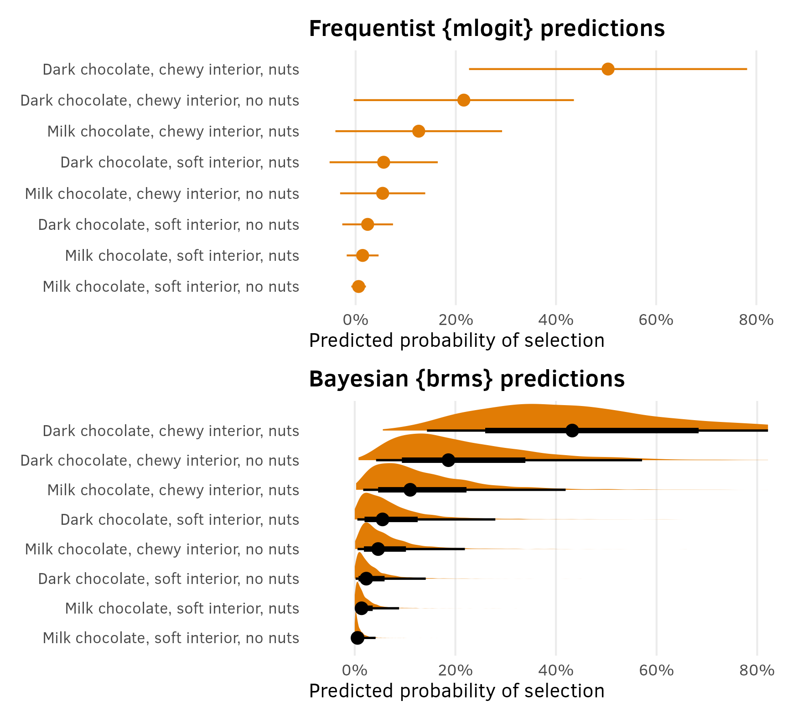
AMCEs
The marketing world doesn’t typically look at coefficients or marginal effects, but the political science world definitely does. In political science, the estimand we often care about the most is the average marginal component effect (AMCE), or the causal effect of moving one feature level to a different value, holding all other features constant. I have a whole in-depth blog post about AMCEs and how to calculate them—go look at that for more details. Long story short—AMCEs are basically the coefficients in a regression model.
Interpreting the coefficients is difficult with models that aren’t basic linear regression. Here, all these coefficients are on the log scale, so they’re not directly interpretable. The original SAS technical note also doesn’t really interpret any of these , they don’t really interpret these things anyway, since they’re more focused on predictions. All they say is this:
The parameter estimate with the smallest p-value is for soft center. Since the parameter estimate is negative, chewy is the more preferred level. Dark is preferred over milk, and nuts over no nuts, however only the p-value for Soft is less than 0.05.
We could exponentiate the coefficients to make them multiplicative (akin to odds ratios in logistic regression). For center = soft, \(e^{-2.19722}\) = 0.1111, which means that candies with a soft center are 89% less likely to be chosen than candies with a chewy center, relative to the average candy. But that’s weird to think about.
So instead we can turn to {marginaleffects} once again to calculate percentage-point scale estimands that we can interpret far more easily.
lol marginal effects
Nobody is ever consistent about the word “marginal effect.” Some people use it to refer to averages; some people use it to refer to slopes. These are complete opposites. In calculus, averages = integrals and slopes = derivatives and they’re the inverse of each other.
I like to think of marginal effects as what happens to the outcome when you move an explanatory variable a tiny bit. With continuous variables, that’s a slope; with categorical variables, that’s an offset in average outcomes. These correspond directly to how you normally interpret regression coefficients. Or returning to my favorite analogy about regression, with numeric variables we care what happens to the outcome when we slide the value up a tiny bit; with categorical variables we care about what happens to the outcome when we switch on a category.
Additionally, there are like a billion different ways to calculate marginal effects: average marginal effects (AMEs), group-average marginal effects (G-AMEs), marginal effects at user-specified values, marginal effects at the mean (MEM), and counterfactual marginal effects. See the documentation for {marginaleffects} + this mega blog post for more about these subtle differences.
Bayesian comparisons/contrasts
We can use avg_comparisons() to calculate the difference (or average marginal effect) for each of the categorical coefficients on the percentage-point scale, showing the effect of moving from milk → dark, chewy → soft, and nuts → no nuts.
(Technically we can also use avg_slopes(), even though none of these coefficients are actually slopes. {marginaleffects} is smart enough to show contrasts for categorical variables and partial derivatives/slopes for continuous variables.)
avg_comparisons(model_chocolate_brms)
##
## Term Contrast Estimate 2.5 % 97.5 %
## dark Dark - Milk 0.139 -0.00551 0.3211
## nuts Nuts - No nuts 0.092 -0.05221 0.2599
## soft Soft - Chewy -0.182 -0.35800 -0.0523
##
## Columns: term, contrast, estimate, conf.low, conf.highWhen holding all other features constant, moving from chewy → soft is associated with a posterior median 18 percentage point decrease in the probability of selection (or drop in market share if you want to think of it that way), on average.
Frequentist comparisons/contrasts
We went out of order in this section and showed how to use avg_comparisons() with the Bayesian model first instead of the frequentist model. That’s because it was easy. mlogit() models behave strangely with {marginaleffects} because {mlogit} forces its predictions to use every possible value of the alternatives A–H. Accordingly, the estimate for any coefficients in the attributes section of the {mlogit} formula (dark, soft, and nuts here) will automatically be zero. Note how here there are 24 rows of comparisons instead of 3, since we get comparisons in each of the 8 groups, and note how the estimates are all zero:
avg_comparisons(model_chocolate_mlogit)
##
## Group Term Contrast Estimate Std. Error z Pr(>|z|) 2.5 % 97.5 %
## A dark Dark - Milk -2.78e-17 7.27e-13 -3.82e-05 1 -1.42e-12 1.42e-12
## B dark Dark - Milk 0.00e+00 NA NA NA NA NA
## C dark Dark - Milk 0.00e+00 1.62e-14 0.00e+00 1 -3.17e-14 3.17e-14
## D dark Dark - Milk -6.94e-18 1.73e-13 -4.02e-05 1 -3.38e-13 3.38e-13
## E dark Dark - Milk -2.78e-17 7.27e-13 -3.82e-05 1 -1.42e-12 1.42e-12
## F dark Dark - Milk 0.00e+00 NA NA NA NA NA
## G dark Dark - Milk 0.00e+00 1.62e-14 0.00e+00 1 -3.17e-14 3.17e-14
## H dark Dark - Milk -6.94e-18 1.73e-13 -4.02e-05 1 -3.38e-13 3.38e-13
## A nuts Nuts - No nuts 1.39e-17 NA NA NA NA NA
## B nuts Nuts - No nuts 1.39e-17 NA NA NA NA NA
## C nuts Nuts - No nuts 0.00e+00 1.41e-14 0.00e+00 1 -2.77e-14 2.77e-14
## D nuts Nuts - No nuts 0.00e+00 1.41e-14 0.00e+00 1 -2.77e-14 2.77e-14
## E nuts Nuts - No nuts 0.00e+00 9.74e-13 0.00e+00 1 -1.91e-12 1.91e-12
## F nuts Nuts - No nuts 0.00e+00 9.74e-13 0.00e+00 1 -1.91e-12 1.91e-12
## G nuts Nuts - No nuts 0.00e+00 1.08e-13 0.00e+00 1 -2.11e-13 2.11e-13
## H nuts Nuts - No nuts 0.00e+00 1.08e-13 0.00e+00 1 -2.11e-13 2.11e-13
## A soft Soft - Chewy 6.94e-18 1.08e-13 6.42e-05 1 -2.12e-13 2.12e-13
## B soft Soft - Chewy 1.39e-17 2.16e-13 6.43e-05 1 -4.23e-13 4.23e-13
## C soft Soft - Chewy 6.94e-18 1.08e-13 6.42e-05 1 -2.12e-13 2.12e-13
## D soft Soft - Chewy 1.39e-17 2.16e-13 6.43e-05 1 -4.23e-13 4.23e-13
## E soft Soft - Chewy 1.39e-17 4.33e-13 3.21e-05 1 -8.48e-13 8.48e-13
## F soft Soft - Chewy 0.00e+00 4.52e-13 0.00e+00 1 -8.86e-13 8.86e-13
## G soft Soft - Chewy 1.39e-17 4.33e-13 3.21e-05 1 -8.48e-13 8.48e-13
## H soft Soft - Chewy 0.00e+00 4.52e-13 0.00e+00 1 -8.86e-13 8.86e-13
##
## Columns: group, term, contrast, estimate, std.error, statistic, p.value, conf.low, conf.highIf we had continuous variables, we could work around this by specifying our own tiny amount of marginal change to compare across, but we’re working with categories and can’t do that. Instead, with categorical variables, we can return to predictions() and define custom aggregations of different features and levels.
Before making custom aggregations, though, it’ll be helpful to illustrate what exactly we’re looking at when collapsing these results. Remember that earlier we calculated predictions for all the unique combinations of dark, soft, and nuts:
preds_chocolate_mlogit <- predictions(
model_chocolate_mlogit,
newdata = datagrid(dark = unique, soft = unique, nuts = unique)
)
preds_chocolate_mlogit %>%
as_tibble() %>%
select(group, dark, soft, nuts, estimate)
## # A tibble: 8 × 5
## group dark soft nuts estimate
## <chr> <fct> <fct> <fct> <dbl>
## 1 A Milk Chewy No nuts 0.0540
## 2 B Milk Chewy Nuts 0.126
## 3 C Milk Soft No nuts 0.00600
## 4 D Milk Soft Nuts 0.0140
## 5 E Dark Chewy No nuts 0.216
## 6 F Dark Chewy Nuts 0.504
## 7 G Dark Soft No nuts 0.0240
## 8 H Dark Soft Nuts 0.0560Four of the groups have dark = Milk and four have dark = Dark, with other varying characteristics across those groups (chewy/soft, nuts/no nuts). If we want the average proportion of all milk and dark chocolate options, we can group and summarize:
preds_chocolate_mlogit %>%
group_by(dark) %>%
summarize(avg_pred = mean(estimate))
## # A tibble: 2 × 2
## dark avg_pred
## <fct> <dbl>
## 1 Milk 0.0500
## 2 Dark 0.200The average market share for milk chocolate candies, holding all other features constant, is 5% (\(\frac{0.0540 + 0.126 + 0.006 + 0.014}{2} = 0.05\)); the average market share for dark chocolate candies is 20% (\(\frac{0.216 + 0.504 + 0.024 + 0.056}{2} = 0.2\)). These values are the averages of the predictions from the four groups where dark is either Milk or Dark.
Instead of calculating these averages manually (which would also force us to calculate standard errors and p-values manually, which, ugh), we can calculate these aggregate group means with predictions(). To do this, we can feed a little data frame to predictions() with the by argument. The data frame needs to contain columns for the features we want to collapse, and a by column with the labels we want to include in the output. For example, if we want to collapse the eight possible choices into those with milk chocolate and those with dark chocolate, we could create a by data frame like this:
by <- data.frame(dark = c("Milk", "Dark"), by = c("Milk", "Dark"))
by
## dark by
## 1 Milk Milk
## 2 Dark DarkIf we use that by data frame in predictions(), we get the same 5% and 20% from before, but now with all of {marginaleffects}’s extra features like standard errors and confidence intervals:
predictions(
model_chocolate_mlogit,
by = by
)
##
## Estimate Std. Error z Pr(>|z|) 2.5 % 97.5 % By
## 0.20 0.0316 6.32 <0.001 0.138 0.262 Dark
## 0.05 0.0316 1.58 0.114 -0.012 0.112 Milk
##
## Columns: estimate, std.error, statistic, p.value, conf.low, conf.high, byEven better, we can use the hypothesis functionality of predictions() to conduct a hypothesis test and calculate the difference (or contrast) between these two averages, which is exactly what we’re looking for with categorical AMCEs. This shows the average causal effect of moving from milk → dark—holding all other features constant, switching the chocolate type from milk to dark causes a 15 percentage point increase in the probability of selecting the candy, on average.
predictions(
model_chocolate_mlogit,
by = by,
hypothesis = "revpairwise"
)
##
## Term Estimate Std. Error z Pr(>|z|) 2.5 % 97.5 %
## Milk - Dark -0.15 0.0632 -2.37 0.0177 -0.274 -0.026
##
## Columns: term, estimate, std.error, statistic, p.value, conf.low, conf.highWe can’t simultaneously specify all the contrasts we’re interested in single by argument, but we can do them separately and combine them into a single data frame:
amces_chocolate_mlogit <- bind_rows(
dark = predictions(
model_chocolate_mlogit,
by = data.frame(dark = c("Milk", "Dark"), by = c("Milk", "Dark")),
hypothesis = "revpairwise"
),
soft = predictions(
model_chocolate_mlogit,
by = data.frame(soft = c("Chewy", "Soft"), by = c("Chewy", "Soft")),
hypothesis = "revpairwise"
),
nuts = predictions(
model_chocolate_mlogit,
by = data.frame(nuts = c("No nuts", "Nuts"), by = c("No nuts", "Nuts")),
hypothesis = "revpairwise"
),
.id = "variable"
)
amces_chocolate_mlogit
##
## Term Estimate Std. Error z Pr(>|z|) 2.5 % 97.5 %
## Milk - Dark -0.15 0.0632 -2.37 0.0177 -0.274 -0.026
## Soft - Chewy -0.20 0.0474 -4.22 <0.001 -0.293 -0.107
## Nuts - No nuts 0.10 0.0725 1.38 0.1675 -0.042 0.242
##
## Columns: variable, term, estimate, std.error, statistic, p.value, conf.low, conf.highPlots
Plotting these AMCEs requires a bit of data wrangling, but we get really neat plots, so it’s worth it. I’ve hidden all the code here for the sake of space.
Extract variable labels
chocolate_var_levels <- tibble(
variable = c("dark", "soft", "nuts")
) %>%
mutate(levels = map(variable, ~{
x <- chocolate[[.x]]
if (is.numeric(x)) {
""
} else if (is.factor(x)) {
levels(x)
} else {
sort(unique(x))
}
})) %>%
unnest(levels) %>%
mutate(term = paste0(variable, levels))
# Make a little lookup table for nicer feature labels
chocolate_var_lookup <- tribble(
~variable, ~variable_nice,
"dark", "Type of chocolate",
"soft", "Type of center",
"nuts", "Nuts"
) %>%
mutate(variable_nice = fct_inorder(variable_nice))Combine full dataset of factor levels with model comparisons and make {mlogit} plot
amces_chocolate_mlogit_split <- amces_chocolate_mlogit %>%
separate_wider_delim(
term,
delim = " - ",
names = c("variable_level", "reference_level")
) %>%
rename(term = variable)
plot_data <- chocolate_var_levels %>%
left_join(
amces_chocolate_mlogit_split,
by = join_by(variable == term, levels == variable_level)
) %>%
# Make these zero
mutate(
across(
c(estimate, conf.low, conf.high),
~ ifelse(is.na(.x), 0, .x)
)
) %>%
left_join(chocolate_var_lookup, by = join_by(variable)) %>%
mutate(across(c(levels, variable_nice), ~fct_inorder(.)))
p1 <- ggplot(
plot_data,
aes(x = estimate, y = levels, color = variable_nice)
) +
geom_vline(xintercept = 0) +
geom_pointrange(aes(xmin = conf.low, xmax = conf.high)) +
scale_x_continuous(labels = label_pp) +
scale_color_manual(values = clrs[c(1, 3, 8)]) +
guides(color = "none") +
labs(
x = "Percentage point change in\nprobability of candy selection",
y = NULL,
title = "Frequentist AMCEs from {mlogit}"
) +
facet_col(facets = "variable_nice", scales = "free_y", space = "free")Combine full dataset of factor levels with posterior draws and make {brms} plot
# This is much easier than the mlogit mess because we can use avg_comparisons() directly
posterior_mfx <- model_chocolate_brms %>%
avg_comparisons() %>%
posteriordraws()
posterior_mfx_nested <- posterior_mfx %>%
separate_wider_delim(
contrast,
delim = " - ",
names = c("variable_level", "reference_level")
) %>%
group_by(term, variable_level) %>%
nest()
# Combine full dataset of factor levels with model results
plot_data_bayes <- chocolate_var_levels %>%
left_join(
posterior_mfx_nested,
by = join_by(variable == term, levels == variable_level)
) %>%
mutate(data = map_if(data, is.null, ~ tibble(draw = 0, estimate = 0))) %>%
unnest(data) %>%
left_join(chocolate_var_lookup, by = join_by(variable)) %>%
mutate(across(c(levels, variable_nice), ~fct_inorder(.)))
p2 <- ggplot(plot_data_bayes, aes(x = draw, y = levels, fill = variable_nice)) +
geom_vline(xintercept = 0) +
stat_halfeye(normalize = "groups") + # Make the heights of the distributions equal within each facet
guides(fill = "none") +
facet_col(facets = "variable_nice", scales = "free_y", space = "free") +
scale_x_continuous(labels = label_pp) +
scale_fill_manual(values = clrs[c(1, 3, 8)]) +
labs(
x = "Percentage point change in\nprobability of candy selection",
y = NULL,
title = "Posterior Bayesian AMCEs from {brms}"
)p1 | p2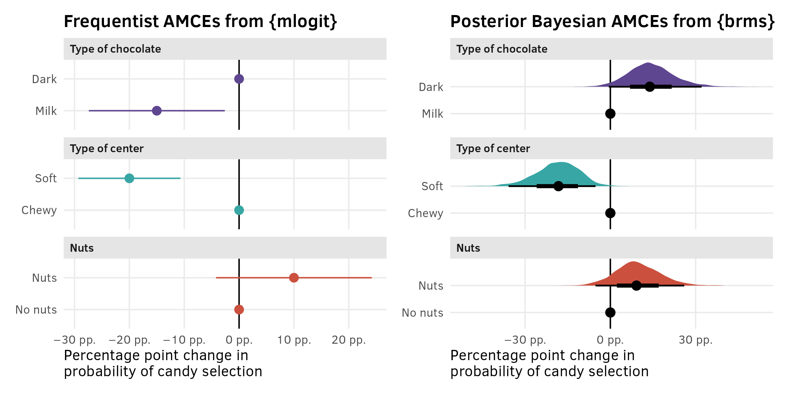
Part 2: Minivans; repeated questions; basic multinomial logit
The setup
In this experiment, respondents are asked to choose which of these minivans they’d want to buy, based on four different features/attributes with different levels:
| Features/Attributes | Levels |
|---|---|
| Passengers | 6, 7, 8 |
| Cargo area | 2 feet, 3 feet |
| Engine | Gas, electric, hybrid |
| Price | $30,000; $35,000; $40,000 |
Respondents see this a question similar to this fifteen different times, with three options with randomly shuffled levels for each of the features.
Example survey question
| Option 1 | Option 2 | Option 3 | |
|---|---|---|---|
| Passengers | 7 | 8 | 6 |
| Cargo area | 3 feet | 3 feet | 2 feet |
| Engine | Electric | Gas | Hybrid |
| Price | $40,000 | $40,000 | $30,000 |
| Choice |
The data
The data for this kind of experiment has one row for each possible alternative (alt) within each set of 15 questions (ques), thus creating 3 × 15 = 45 rows per respondent (resp.id). There were 200 respondents, with 45 rows each, so there are 200 × 45 = 9,000 rows. Here, Respondent 1 chose a $30,000 gas van with 6 seats and 3 feet of cargo space in the first set of three options, a $35,000 gas van with 7 seats and 3 feet of cargo space in the second set of three options, and so on.
There’s also a column here for carpool indicating if the respondent carpools with others when commuting. It’s an individual respondent-level characteristic and is constant throughout all the questions and alternatives, and we’ll use it later.
minivans
## # A tibble: 9,000 × 9
## resp.id ques alt carpool seat cargo eng price choice
## <dbl> <dbl> <dbl> <fct> <fct> <fct> <fct> <fct> <dbl>
## 1 1 1 1 yes 6 2ft gas 35 0
## 2 1 1 2 yes 8 3ft hyb 30 0
## 3 1 1 3 yes 6 3ft gas 30 1
## 4 1 2 1 yes 6 2ft gas 30 0
## 5 1 2 2 yes 7 3ft gas 35 1
## 6 1 2 3 yes 6 2ft elec 35 0
## 7 1 3 1 yes 8 3ft gas 35 1
## 8 1 3 2 yes 7 3ft elec 30 0
## 9 1 3 3 yes 8 2ft elec 40 0
## 10 1 4 1 yes 7 3ft elec 40 1
## # ℹ 8,990 more rowsThe model
Respondents were shown three different options and asked to select one. We thus have three possible outcomes: a respondent could have selected option 1, option 2, or option 3. Because everything was randomized, there shouldn’t be any patterns in which options people choose—we don’t want to see that the first column is more common, since that would indicate that respondents are just repeatedly selecting the first column to get through the survey. Since there are three possible outcomes (option 1, 2, and 3), we’ll use multinomial logistic regression.
Original model as a baseline
In the example in their textbook, Chapman and Feit (2019) use {mlogit} to estimate this model and they find these results. This will be our baseline throughout this example.

mlogit model
This data is a little more complex now, since there are alternatives nested inside questions inside respondents. To account for this panel structure when using {mlogit}, we need to define two index columns: one for the unique set of alternatives offered to the respondent and one for the respondent ID. We still do this with dfidx(), but need to create a new column with an ID number for each unique combination of respondent ID and question number:
minivans_idx <- minivans %>%
# mlogit() needs a column with unique question id numbers
group_by(resp.id, ques) %>%
mutate(choice.id = cur_group_id()) %>%
ungroup() %>%
# Make indexed data frame for mlogit
dfidx(
idx = list(c("choice.id", "resp.id"), "alt"),
choice = "choice",
shape = "long"
)Now we can fit the model. Note the 0 ~ seat syntax here. That suppresses the intercept for the model, which behaves weirdly with multinomial models. Since there are three categories for the outcome (options 1, 2, and 3), there are two intercepts, representing cutpoints-from-ordered-logit-esque shifts in the probability of selecting option 1 vs. option 2 and option 2 vs. option 3. We don’t want to deal with those, so we’ll suppress them.
model_minivans_mlogit <- mlogit(
choice ~ 0 + seat + cargo + eng + price | 0 | 0,
data = minivans_idx
)
model_parameters(model_minivans_mlogit, digits = 4, p_digits = 4)
## Parameter | Log-Odds | SE | 95% CI | z | p
## -------------------------------------------------------------------------
## seat [7] | -0.5353 | 0.0624 | [-0.66, -0.41] | -8.5837 | 9.1863e-18
## seat [8] | -0.3058 | 0.0611 | [-0.43, -0.19] | -5.0032 | 5.6376e-07
## cargo [3ft] | 0.4774 | 0.0509 | [ 0.38, 0.58] | 9.3824 | 6.4514e-21
## eng [hyb] | -0.8113 | 0.0601 | [-0.93, -0.69] | -13.4921 | 1.7408e-41
## eng [elec] | -1.5308 | 0.0675 | [-1.66, -1.40] | -22.6926 | 5.3004e-114
## price [35] | -0.9137 | 0.0606 | [-1.03, -0.79] | -15.0765 | 2.3123e-51
## price [40] | -1.7259 | 0.0696 | [-1.86, -1.59] | -24.7856 | 1.2829e-135These are the same results from p. 371 in Chapman and Feit (2019), so it worked. Again, the marketing world doesn’t typically do much with these coefficients beyond looking at their direction and magnitude. For instance, in Chapman and Feit (2019) they say that the estimate for seat [7] here is negative, which means that a 7-seat option is less preferred than 6-seat option, and that the estimate for price [40] is more negative than the already-negative estimate for price [35], which means that (1) respondents don’t like the $35,000 option compared to the baseline $30,000 and that (2) respondents really don’t like the $40,000 option. We could theoretically exponentiate these things—like, seeing 7 seats makes it \(e^{-0.5353}\) = 0.5855 = 41% less likely to select the option compared to 6 seats—but again, that’s weird.
Bayesian model with {brms}
We can also fit this multinomial model in a Bayesian way using {brms}. Stan has a categorical family for dealing with mulitnomial/categorical outcomes. But first, we’ll look at the nested structure of this data and incorporate that into the model, since we won’t be using the weird {mlogit}-style indexed data frame. As with the chocolate experiment, the data has a natural hierarchy in it, with three questions nested inside 15 separate question sets, nested inside each of the 200 respondents.
Currently, our main outcome variable choice is binary. If we run the model with choice as the outcome with a categorical family, the model will fit, but it will go slow and {brms} will complain about it and recommend switching to regular logistic regression. The categorical family in Stan requires 2+ outcomes and a reference category. Here we have three possible options (1, 2, and 3), and we can imagine a reference category of 0 for rows that weren’t selected.
We can create a new outcome column (choice_alt) that indicates which option each respondent selected: 0 if they didn’t choose the option and 1–3 if they chose the first, second, or third option. Because of how the data is recorded, this only requires multiplying alt and choice:
minivans_choice_alt <- minivans %>%
mutate(choice_alt = factor(alt * choice))
minivans_choice_alt %>%
select(resp.id, ques, alt, seat, cargo, eng, price, choice, choice_alt)
## # A tibble: 9,000 × 9
## resp.id ques alt seat cargo eng price choice choice_alt
## <dbl> <dbl> <dbl> <fct> <fct> <fct> <fct> <dbl> <fct>
## 1 1 1 1 6 2ft gas 35 0 0
## 2 1 1 2 8 3ft hyb 30 0 0
## 3 1 1 3 6 3ft gas 30 1 3
## 4 1 2 1 6 2ft gas 30 0 0
## 5 1 2 2 7 3ft gas 35 1 2
## 6 1 2 3 6 2ft elec 35 0 0
## 7 1 3 1 8 3ft gas 35 1 1
## 8 1 3 2 7 3ft elec 30 0 0
## 9 1 3 3 8 2ft elec 40 0 0
## 10 1 4 1 7 3ft elec 40 1 1
## # ℹ 8,990 more rowsWe can now use the new four-category choice_alt column as our outcome with the categorical() family.
If we realllly wanted, we could add random effects for question sets nested inside respondents, like (1 | resp.id / ques). We’d want to do that if there were set-specific things that could influences choices. Like maybe we want to account for the possibility that everyone’s just choosing the first option, so it behaves differently? Or maybe the 5th set of questions is set to an extra difficult level on a quiz or something? Or maybe we have so many sets that we think the later ones will be less accurate because of respondent fatigue? idk. In this case, question set-specific effects don’t matter at all. Each question set is equally randomized and no different from the others, so we won’t bother modeling that layer of the hierarchy.
We want to model the choice of option 1, 2, or 3 (choice_alt) based on minivan characteristics (seat, cargo, eng, price). With the categorical model, we actually get a set of parameters to estimate the probability of selecting each of the options, which Stan calls \(\mu\), so we have a set of three probabilities: \(\{\mu_1, \mu_2, \mu_3\}\). We’ll use the subscript \(i\) to refer to individual minivan choices and \(j\) to refer to respondents. Here’s the fun formal model:
\[ \begin{aligned} &\ \textbf{Multinomial probability of selection of choice}_i \textbf{ in respondent}_j \\ \text{Choice}_{i_j} \sim&\ \operatorname{Categorical}(\{\mu_{1,i_j}, \mu_{2,i_j}, \mu_{3,i_j}\}) \\[10pt] &\ \textbf{Model for probability of each option} \\ \{\mu_{1,i_j}, \mu_{2,i_j}, \mu_{3,i_j}\} =&\ (\beta_0 + b_{0_j}) + \beta_1 \text{Seat[7]}_{i_j} + \beta_2 \text{Seat[8]}_{i_j} + \beta_3 \text{Cargo[3ft]}_{i_j} + \\ &\ \beta_4 \text{Engine[hyb]}_{i_j} + \beta_5 \text{Engine[elec]}_{i_j} + \beta_6 \text{Price[35k]}_{i_j} + \beta_7 \text{Price[40k]}_{i_j} \\[5pt] b_{0_j} \sim&\ \mathcal{N}(0, \sigma_0) \qquad\quad\quad \text{Respondent-specific offsets from global probability} \\[10pt] &\ \textbf{Priors} \\ \beta_{0 \dots 7} \sim&\ \mathcal{N} (0, 3) \qquad\qquad\ \ \text{Prior for choice-level coefficients} \\ \sigma_0 \sim&\ \operatorname{Exponential}(1) \quad \text{Prior for between-respondent variability} \end{aligned} \]
And here’s the {brms} model. Notice the much-more-verbose prior section—because the categorical family in Stan estimates separate parameters for each of the categories (\(\{\mu_1, \mu_2, \mu_3\}\)), we have a mean and standard deviation for the probability of selecting each of those options. We need to specify each of these separately too instead of just doing something like prior(normal(0, 3), class = b). Also notice the refcat argument in categorical()—this makes it so that all the estimates are relative to not choosing an option (or when choice_alt is 0). And also notice the slightly different syntax for the random respondent intercepts: (1 | ID | resp.id). That new middle ID is special {brms} formula syntax that we can use when working with categorical or ordinal families, and it makes it so that the group-level effects for the different outcomes (here options 0, 1, 2, and 3) are correlated (see p. 4 of this {brms} vignette for more about this special syntax).
model_minivans_categorical_brms <- brm(
bf(choice_alt ~ 0 + seat + cargo + eng + price + (1 | ID | resp.id)),
data = minivans_choice_alt,
family = categorical(refcat = "0"),
prior = c(
prior(normal(0, 3), class = b, dpar = mu1),
prior(normal(0, 3), class = b, dpar = mu2),
prior(normal(0, 3), class = b, dpar = mu3),
prior(exponential(1), class = sd, dpar = mu1),
prior(exponential(1), class = sd, dpar = mu2),
prior(exponential(1), class = sd, dpar = mu3)
),
chains = 4, cores = 4, iter = 2000, seed = 1234,
backend = "cmdstanr", threads = threading(2), refresh = 0,
file = "models/model_minivans_categorical_brms"
)This model gives us a ton of parameters! We get three estimates per feature level (i.e. mu1_cargo3ft, mu2_cargo3ft, and mu3_cargo3ft for the cargo3ft effect), since we’re actually estimating the effect of each covariate on the probability of selecting each of the three options.
model_parameters(model_minivans_categorical_brms)
## Parameter | Median | 95% CI | pd | Rhat | ESS
## -----------------------------------------------------------------
## mu1_seat6 | -0.34 | [-0.52, -0.16] | 99.95% | 1.001 | 2673.00
## mu1_seat7 | -0.86 | [-1.04, -0.67] | 100% | 1.000 | 3167.00
## mu1_seat8 | -0.59 | [-0.77, -0.41] | 100% | 1.000 | 3373.00
## mu1_cargo3ft | 0.46 | [ 0.32, 0.60] | 100% | 1.000 | 6314.00
## mu1_enghyb | -0.76 | [-0.92, -0.60] | 100% | 1.001 | 4628.00
## mu1_engelec | -1.51 | [-1.69, -1.33] | 100% | 0.999 | 4913.00
## mu1_price35 | -0.82 | [-0.99, -0.67] | 100% | 0.999 | 4574.00
## mu1_price40 | -1.74 | [-1.94, -1.56] | 100% | 1.000 | 4637.00
## mu2_seat6 | -0.39 | [-0.57, -0.20] | 100% | 1.000 | 2387.00
## mu2_seat7 | -0.95 | [-1.15, -0.77] | 100% | 1.001 | 2470.00
## mu2_seat8 | -0.67 | [-0.85, -0.49] | 100% | 1.001 | 2489.00
## mu2_cargo3ft | 0.49 | [ 0.35, 0.63] | 100% | 1.000 | 4836.00
## mu2_enghyb | -0.79 | [-0.95, -0.63] | 100% | 1.000 | 4421.00
## mu2_engelec | -1.40 | [-1.57, -1.22] | 100% | 1.000 | 4261.00
## mu2_price35 | -0.79 | [-0.95, -0.63] | 100% | 1.001 | 3699.00
## mu2_price40 | -1.47 | [-1.65, -1.29] | 100% | 0.999 | 3978.00
## mu3_seat6 | -0.28 | [-0.46, -0.11] | 99.85% | 1.000 | 2077.00
## mu3_seat7 | -0.78 | [-0.96, -0.60] | 100% | 1.000 | 3025.00
## mu3_seat8 | -0.63 | [-0.81, -0.46] | 100% | 1.000 | 2483.00
## mu3_cargo3ft | 0.36 | [ 0.23, 0.50] | 100% | 0.999 | 5327.00
## mu3_enghyb | -0.73 | [-0.88, -0.58] | 100% | 1.000 | 4039.00
## mu3_engelec | -1.41 | [-1.59, -1.23] | 100% | 1.001 | 3818.00
## mu3_price35 | -0.85 | [-1.01, -0.69] | 100% | 1.000 | 4315.00
## mu3_price40 | -1.56 | [-1.75, -1.39] | 100% | 0.999 | 4774.00Importantly, the estimates here are all roughly equivalent to what we get from {mlogit}: the {mlogit} estimate for cargo3ft was 0.4775, while the three median posterior {brms} estimates are 0.46 (95% credible interval: 0.32–0.60), 0.49 (0.35–0.63), and 0.36 (0.23–0.50)
Since all the features are randomly shuffled between the three options each time, and each option is selected 1/3rd of the time, it’s probably maybe legal to pool these posterior estimates together (maaaaybeee???) so that we don’t have to work with three separate estimates for each parameter? To do this we’ll take the average of each of the three \(\mu\) estimates within each draw, which is also called “marginalizing” across the three options.
Here’s how we’d do that with {tidybayes}. The medians are all roughly the same now!
minivans_cat_marginalized <- model_minivans_categorical_brms %>%
gather_draws(`^b_.*$`, regex = TRUE) %>%
# Each variable name has "mu1", "mu2", etc. built in, like "b_mu1_seat6". This
# splits the .variable column into two parts based on a regular expression,
# creating one column for the mu part ("b_mu1_") and one for the rest of the
# variable name ("seat6")
separate_wider_regex(
.variable,
patterns = c(mu = "b_mu\\d_", .variable = ".*")
) %>%
# Find the average of the three mu estimates for each variable within each
# draw, or marginalize across the three options, since they're randomized
group_by(.variable, .draw) %>%
summarize(.value = mean(.value))
minivans_cat_marginalized %>%
group_by(.variable) %>%
median_qi()
## # A tibble: 8 × 7
## .variable .value .lower .upper .width .point .interval
## <chr> <dbl> <dbl> <dbl> <dbl> <chr> <chr>
## 1 cargo3ft 0.439 0.340 0.532 0.95 median qi
## 2 engelec -1.44 -1.56 -1.32 0.95 median qi
## 3 enghyb -0.762 -0.871 -0.651 0.95 median qi
## 4 price35 -0.823 -0.935 -0.713 0.95 median qi
## 5 price40 -1.59 -1.72 -1.47 0.95 median qi
## 6 seat6 -0.337 -0.464 -0.208 0.95 median qi
## 7 seat7 -0.862 -0.994 -0.734 0.95 median qi
## 8 seat8 -0.629 -0.753 -0.503 0.95 median qiAnd for fun, here’s what the posterior for new combined/collapsed/marginalized cargo3ft looks like. Great.
minivans_cat_marginalized %>%
filter(.variable == "cargo3ft") %>%
ggplot(aes(x = .value, y = .variable)) +
stat_halfeye(fill = clrs[4]) +
labs(x = "Posterior distribution of β (logit-scale)", y = NULL)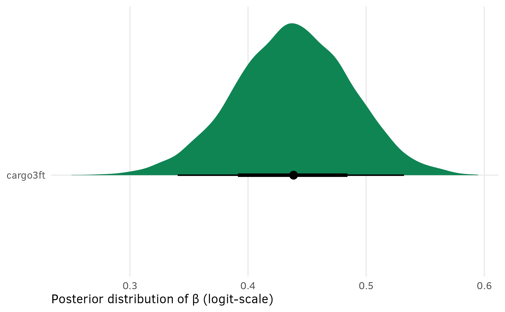
Predictions
As we saw in the first example with chocolates, the marketing world typically uses predictions from these kinds of models to estimate the predicted market share for products with different constellations of features. That was a pretty straightforward task with the chocolate model since respondents were shown all 8 options simultaneously. It’s a lot trickier with the minivan example where respondents were shown 15 sets of 3 options. Dealing with multinomial predictions is a bear of a task because these models are a lot more complex.
Frequentist predictions
With the chocolate model, we could just use avg_predictions(model_chocolate_mlogit) and automatically get predictions for all 8 options. That’s not the case here:
avg_predictions(model_minivans_mlogit)
##
## Group Estimate Std. Error z Pr(>|z|) 2.5 % 97.5 %
## 1 0.333 0.000349 955 <0.001 0.332 0.334
## 2 0.333 0.000145 2291 <0.001 0.333 0.334
## 3 0.334 0.000376 889 <0.001 0.333 0.335
##
## Columns: group, estimate, std.error, statistic, p.value, conf.low, conf.highWe get three predictions, and they’re all 33ish%. That’s because respondents were presented with three randomly shuffled options and chose one of them. All these predictions tell us is that across all 15 iterations of the questions, 1/3 of respondents selected the first option, 1/3 the second, and 1/3 the third. That’s a good sign in this case—there’s no evidence that people were just repeatedly choosing the first option. But in the end, these predictions aren’t super useful.
We instead want to be able to get predicted market shares (or predicted probabilities) for any given mix of products. For instance, here are six hypothetical products with different combinations of seats, cargo space, engines, and prices:
example_product_mix <- tribble(
~seat, ~cargo, ~eng, ~price,
"7", "2ft", "hyb", "30",
"6", "2ft", "gas", "30",
"8", "2ft", "gas", "30",
"7", "3ft", "gas", "40",
"6", "2ft", "elec", "40",
"7", "2ft", "hyb", "35"
) %>%
mutate(across(everything(), factor)) %>%
mutate(eng = factor(eng, levels = levels(minivans$eng)))
example_product_mix
## # A tibble: 6 × 4
## seat cargo eng price
## <fct> <fct> <fct> <fct>
## 1 7 2ft hyb 30
## 2 6 2ft gas 30
## 3 8 2ft gas 30
## 4 7 3ft gas 40
## 5 6 2ft elec 40
## 6 7 2ft hyb 35If we were working with any other type of model, we could plug this data into the newdata argument of predictions() and get predicted values. That doesn’t work here though. There were 200 respondents in the original data, and {mlogit}-predictions need to happen on a dataset with a multiple of that many rows. We can’t just feed it 6 values.
predictions(model_minivans_mlogit, newdata = example_product_mix)
## Error: The `newdata` argument for `mlogit` models must be a data frame with a number of rows equal to a multiple of the number of choices: 200.Instead, following Chapman and Feit (2019) (and this Stan forum post), we can manually multiply the covariates in example_product_mix with the model coefficients to calculate “utility” (or predicted vales on the logit scale), which we can then exponentiate and divide to calculate market shares.
Limits of {marginaleffects} and {mlogit}
From what I can tell, this is not possible with {marginaleffects} because that package can’t work with the coefficients from {mlogit} models and can only really work with predictions. {mlogit} predictions are forced to be on the response/probability scale since they’re, like, predictions, so there’s no way to get them on the log/logit link scale to calculate utilities and shares.
# Create a matrix of 0s and 1s for the values in `example_product_mix`, omitting
# the first column (seat6)
example_product_dummy_encoded <- model.matrix(
update(model_minivans_mlogit$formula, 0 ~ .),
data = example_product_mix
)[, -1]
example_product_dummy_encoded
## seat7 seat8 cargo3ft enghyb engelec price35 price40
## 1 1 0 0 1 0 0 0
## 2 0 0 0 0 0 0 0
## 3 0 1 0 0 0 0 0
## 4 1 0 1 0 0 0 1
## 5 0 0 0 0 1 0 1
## 6 1 0 0 1 0 1 0
# Matrix multiply the matrix of 0s and 1s with the model coefficients to get
# logit-scale predictions, or utility
utility <- example_product_dummy_encoded %*% coef(model_minivans_mlogit)
# Divide each exponentiated utility by the sum of the exponentiated utilities to
# get the market share
share <- exp(utility) / sum(exp(utility))
# Stick all of these in one final dataset
bind_cols(share = share, logits = utility, example_product_mix)
## # A tibble: 6 × 6
## share[,1] logits[,1] seat cargo eng price
## <dbl> <dbl> <fct> <fct> <fct> <fct>
## 1 0.113 -1.35 7 2ft hyb 30
## 2 0.433 0 6 2ft gas 30
## 3 0.319 -0.306 8 2ft gas 30
## 4 0.0728 -1.78 7 3ft gas 40
## 5 0.0167 -3.26 6 2ft elec 40
## 6 0.0452 -2.26 7 2ft hyb 35
Function version of this kind of prediction
On p. 375 of Chapman and Feit (2019) (and at this Stan forum post), there’s a function called predict.mnl() that does this utility and share calculation automatically. Because this post is more didactic and because I’m more interested in the Bayesian approach, I didn’t use it earlier, but it works well.
predict.mnl <- function(model, data) {
# Function for predicting shares from a multinomial logit model
# model: mlogit object returned by mlogit()
# data: a data frame containing the set of designs for which you want to
# predict shares. Same format at the data used to estimate model.
data.model <- model.matrix(update(model$formula, 0 ~ .), data = data)[ , -1]
utility <- data.model %*% model$coef
share <- exp(utility) / sum(exp(utility))
cbind(share, data)
}
predict.mnl(model_minivans_mlogit, example_product_mix)
## share seat cargo eng price
## 1 0.11273 7 2ft hyb 30
## 2 0.43337 6 2ft gas 30
## 3 0.31918 8 2ft gas 30
## 4 0.07281 7 3ft gas 40
## 5 0.01669 6 2ft elec 40
## 6 0.04521 7 2ft hyb 35This new predicted share column sums to one, and it shows us the predicted market share assuming these are the only six products available. The $30,000 six-seater 2ft gas van and the $30,000 eight-seater 2ft gas van would comprise more than 75% (0.43337 + 0.31918) of a market consisting of these six products. Because we did this calculation by hand, we lose all of {marginaleffects}’s extra features like standard errors and hypothesis tests. Alas.
Bayesian predictions
If we use the categorical multinomial {brms} model we run into the same issue of getting weird predictions. Here it shows that 2/3rds of predictions are 0, which makes sense—if a respondent is offered 10 iterations of 3 possible choices, that would be 30 total choices, but they can only choose one option per iteration, so 20 choices (or 20/30 or 2/3) wouldn’t be selected. The other three groups are each 11%, since that’s the remaining 33% divided evenly across three options. Neat, I guess, but still not super helpful.
avg_predictions(model_minivans_categorical_brms)
##
## Group Estimate 2.5 % 97.5 %
## 0 0.667 0.657 0.676
## 1 0.109 0.103 0.115
## 2 0.112 0.105 0.118
## 3 0.113 0.106 0.119
##
## Columns: group, estimate, conf.low, conf.highInstead of going through the manual process of matrix-multiplying a dataset of some mix of products with a single set of coefficients, we can use predictions(..., type = "link") to get predicted values on the log-odds scale, or that utility value that we found before.
marginaleffects::predictions() vs. {tidybayes} functions
We can actually use either marginaleffects::predictions() or {tidybayes}’s *_draw() functions for these posterior predictions. They do the same thing, with slightly different syntax:
# Logit-scale predictions with marginaleffects::predictions()
model_minivans_categorical_brms %>%
predictions(newdata = example_product_mix, re_formula = NA, type = "link") %>%
posterior_draws()
# Logit-scale predictions with tidybayes::add_linpred_draws()
model_minivans_categorical_brms %>%
add_linpred_draws(newdata = example_product_mix, re_formula = NA)Earlier in the chocolate example, I used marginaleffects::predictions() with the Bayesian {brms} model. Here I’m going to switch to the {tidybayes} prediction functions instead, in part because these multinomial models with the categorical() family are a lot more complex (though {marginaleffects} can handle them nicely), but mostly because in the actual paper I’m working on with real conjoint data, our MCMC results were generated with raw Stan code through rstan, and {marginaleffects} doesn’t support raw Stan models.
Check out this guide for the differences between {tidybayes}’s three general prediction functions: predicted_draws(), epred_draws(), and linpred_draws().
Additionally, we now actually have 4,000 draws in 3 categories (option 1, option 2, and option 3), so we actually have 12,000 sets of coefficients (!). To take advantage of the full posterior distribution of these coefficients, we can calculate shares within each set of draws within each of the three categories, resulting in a distribution of shares rather than single values.
draws_df <- example_product_mix %>%
add_linpred_draws(model_minivans_categorical_brms, value = "utility", re_formula = NA)
shares_df <- draws_df %>%
# Look at each set of predicted utilities within each draw within each of the
# three outcomes
group_by(.draw, .category) %>%
mutate(share = exp(utility) / sum(exp(utility))) %>%
ungroup() %>%
mutate(
mix_type = paste(seat, cargo, eng, price, sep = " "),
mix_type = fct_reorder(mix_type, share)
)We can summarize this huge dataset of posterior shares to get medians and credible intervals, but we need to do one extra step first. Right now, we have three predictions for each mix type, one for each of the categories (i.e. option 1, option 2, and option 3.
shares_df %>%
group_by(mix_type, .category) %>%
median_qi(share)
## # A tibble: 18 × 8
## mix_type .category share .lower .upper .width .point .interval
## <fct> <fct> <dbl> <dbl> <dbl> <dbl> <chr> <chr>
## 1 6 2ft elec 40 1 0.0161 0.0123 0.0208 0.95 median qi
## 2 6 2ft elec 40 2 0.0238 0.0183 0.0302 0.95 median qi
## 3 6 2ft elec 40 3 0.0216 0.0168 0.0275 0.95 median qi
## 4 7 2ft hyb 35 1 0.0513 0.0400 0.0647 0.95 median qi
## 5 7 2ft hyb 35 2 0.0485 0.0379 0.0605 0.95 median qi
## 6 7 2ft hyb 35 3 0.0532 0.0424 0.0660 0.95 median qi
## 7 7 3ft gas 40 1 0.0693 0.0543 0.0876 0.95 median qi
## 8 7 3ft gas 40 2 0.0891 0.0705 0.111 0.95 median qi
## 9 7 3ft gas 40 3 0.0775 0.0615 0.0967 0.95 median qi
## 10 7 2ft hyb 30 1 0.117 0.0976 0.139 0.95 median qi
## 11 7 2ft hyb 30 2 0.107 0.0891 0.128 0.95 median qi
## 12 7 2ft hyb 30 3 0.124 0.104 0.146 0.95 median qi
## 13 8 2ft gas 30 1 0.326 0.292 0.363 0.95 median qi
## 14 8 2ft gas 30 2 0.314 0.282 0.348 0.95 median qi
## 15 8 2ft gas 30 3 0.299 0.267 0.331 0.95 median qi
## 16 6 2ft gas 30 1 0.418 0.380 0.457 0.95 median qi
## 17 6 2ft gas 30 2 0.416 0.379 0.454 0.95 median qi
## 18 6 2ft gas 30 3 0.423 0.387 0.462 0.95 median qiSince those options were all randomized, we can lump them all together as a single choice. To do this we’ll take the average share across the three categories (this is also called “marginalizing”) within each posterior draw.
shares_marginalized <- shares_df %>%
# Marginalize across categories within each draw
group_by(mix_type, .draw) %>%
summarize(share = mean(share)) %>%
ungroup()
shares_marginalized %>%
group_by(mix_type) %>%
median_qi(share)
## # A tibble: 6 × 7
## mix_type share .lower .upper .width .point .interval
## <fct> <dbl> <dbl> <dbl> <dbl> <chr> <chr>
## 1 6 2ft elec 40 0.0206 0.0173 0.0242 0.95 median qi
## 2 7 2ft hyb 35 0.0512 0.0435 0.0600 0.95 median qi
## 3 7 3ft gas 40 0.0788 0.0673 0.0915 0.95 median qi
## 4 7 2ft hyb 30 0.116 0.103 0.131 0.95 median qi
## 5 8 2ft gas 30 0.313 0.291 0.337 0.95 median qi
## 6 6 2ft gas 30 0.419 0.394 0.446 0.95 median qiAnd we can plot them:
shares_marginalized %>%
ggplot(aes(x = share, y = mix_type)) +
stat_halfeye(fill = clrs[10], normalize = "xy") +
scale_x_continuous(labels = label_percent()) +
labs(x = "Predicted market share", y = "Hypothetical product mix")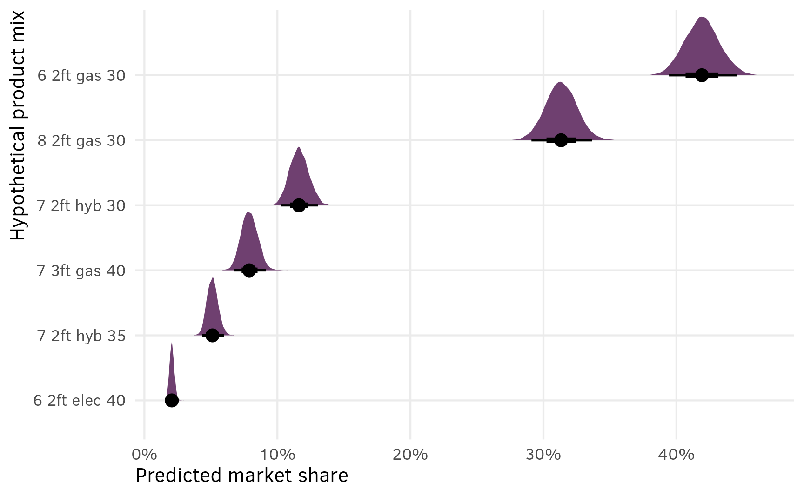
This is great because (1) it includes the uncertainty in the estimated shares, and (2) it lets us do neat Bayesian inference and say things like “there’s a 93% chance that in this market of 6 options, a $30,000 6-passenger gas minivan with 2 feet of storage would reach at least 40% market share”:
shares_marginalized %>%
filter(mix_type == "6 2ft gas 30") %>%
summarize(prop_greater_40 = sum(share >= 0.4) / n())
## # A tibble: 1 × 1
## prop_greater_40
## <dbl>
## 1 0.931
shares_marginalized %>%
filter(mix_type == "6 2ft gas 30") %>%
ggplot(aes(x = share, y = mix_type)) +
stat_halfeye(aes(fill_ramp = after_stat(x >= 0.4)), fill = clrs[10]) +
geom_vline(xintercept = 0.4) +
scale_x_continuous(labels = label_percent()) +
scale_fill_ramp_discrete(from = colorspace::lighten(clrs[10], 0.4), guide = "none") +
labs(x = "Predicted market share", y = NULL)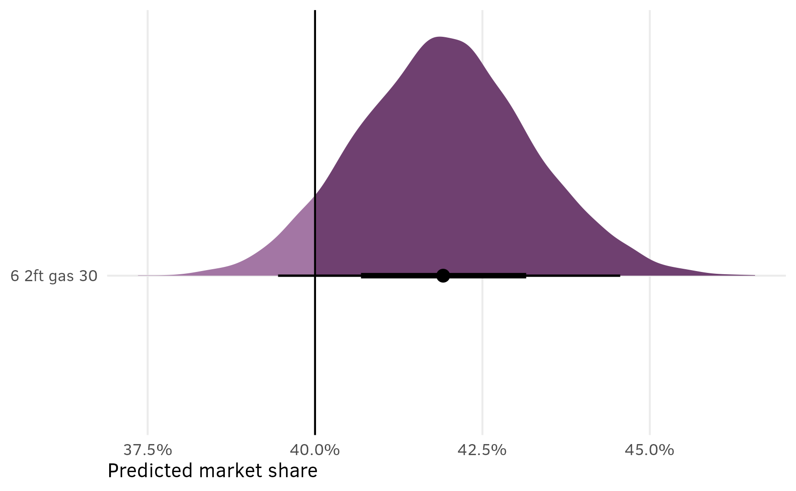
AMCEs
As explained in the AMCEs section for the chocolate data, in the social sciences we’re less concerned about predicted market shares and more concerned about causal effects. Holding all other features constant, what is the effect of a $5,000 increase in price or moving from 2 feet → 3 feet of storage space on the probability (or favorability) of selecting a minivan?
In the chocolate example, we were able to use marginaleffects::avg_comparisons() with the Bayesian model and get categorical contrasts automatically. This was because we cheated and used a Poisson model, since those can secretly behave like multinomial models. For the frequentist {mlogit}-based model, we had to use marginaleffects::predictions() instead and specify a special by argument to collapse the predictions into the different contrasts we were interested in.
In this case, since both the frequentist and Bayesian models for minivans are true multinomial models, we have to return to {marginaleffects}’s special syntax that lets us pass a data frame as the by argument.
Frequentist comparisons/contrasts
To help with the intuition behind this, since it’s more complex this time, we’ll first create a data frame with all 54 combinations of all the feature levels (3 seats × 2 cargos × 3 engines × 3 prices) and create a by column label that concatenates all the labels together so there’s a single unique label for each row:
by_all_combos <- minivans %>%
tidyr::expand(seat, cargo, eng, price) %>%
mutate(by = paste(seat, cargo, eng, price, sep = "_"))
by_all_combos
## # A tibble: 54 × 5
## seat cargo eng price by
## <fct> <fct> <fct> <fct> <chr>
## 1 6 2ft gas 30 6_2ft_gas_30
## 2 6 2ft gas 35 6_2ft_gas_35
## 3 6 2ft gas 40 6_2ft_gas_40
## 4 6 2ft hyb 30 6_2ft_hyb_30
## 5 6 2ft hyb 35 6_2ft_hyb_35
## 6 6 2ft hyb 40 6_2ft_hyb_40
## 7 6 2ft elec 30 6_2ft_elec_30
## 8 6 2ft elec 35 6_2ft_elec_35
## 9 6 2ft elec 40 6_2ft_elec_40
## 10 6 3ft gas 30 6_3ft_gas_30
## # ℹ 44 more rowsWe can then feed this by_all_combos data frame into predictions(), which will generate predictions for all these levels collapsed by all three of the possible groups (i.e. option 1, option 2, and option 3). We can then split the by column back into separate columns for each of the feature levels so that we have those original columns back.
all_preds_mlogit <- predictions(
model_minivans_mlogit,
# predictions.mlogit() weirdly gets mad when working with tibbles :shrug:
by = as.data.frame(by_all_combos)
) %>%
# Split the `by` column up into separate columns
separate(by, into = c("seat", "cargo", "eng", "price"))
as_tibble(all_preds_mlogit)
## # A tibble: 54 × 10
## estimate std.error statistic p.value conf.low conf.high seat cargo eng price
## <dbl> <dbl> <dbl> <dbl> <dbl> <dbl> <chr> <chr> <chr> <chr>
## 1 0.348 0.0135 25.8 1.89e-146 0.321 0.374 6 2ft elec 30
## 2 0.173 0.00907 19.0 7.82e- 81 0.155 0.190 6 2ft elec 35
## 3 0.0872 0.00565 15.4 1.04e- 53 0.0761 0.0983 6 2ft elec 40
## 4 0.695 0.0122 57.0 0 0.671 0.719 6 2ft gas 30
## 5 0.491 0.0147 33.3 1.08e-243 0.462 0.520 6 2ft gas 35
## 6 0.311 0.0130 23.8 1.40e-125 0.285 0.336 6 2ft gas 40
## 7 0.499 0.0138 36.3 3.76e-288 0.472 0.526 6 2ft hyb 30
## 8 0.300 0.0126 23.8 8.97e-125 0.275 0.324 6 2ft hyb 35
## 9 0.161 0.00952 16.9 3.90e- 64 0.142 0.180 6 2ft hyb 40
## 10 0.430 0.0147 29.2 2.13e-187 0.402 0.459 6 3ft elec 30
## # ℹ 44 more rowsThere are a lot of predicted probabilities here, so we need to collapse and average these by groups to make any sense of them. For instance, suppose we’re interested in the AMCE of cargo space. We can first find the average predicted probability of selection with some grouping and summarizing:
manual_cargo_example <- all_preds_mlogit %>%
group_by(cargo) %>%
summarize(avg_pred = mean(estimate))
manual_cargo_example
## # A tibble: 2 × 2
## cargo avg_pred
## <chr> <dbl>
## 1 2ft 0.292
## 2 3ft 0.375
diff(manual_cargo_example$avg_pred)
## [1] 0.08326Holding all other features constant, the average probability (or average favorability, or average market share, or whatever we want to call it) of selecting a minivan with 2 feet of storage space is 0.292 (this is the average of the 27 predictions from all_preds_mlogit where cargo = 2ft); the average probability for a minivan with 3 feet of storage space is 0.375 (again, this is the average of the 27 predictions from all_preds_mlogit where cargo = 3ft). There’s an 8.3 percentage point difference between these groups. This is the causal effect or AMCE: switching from 2 feet to 3 feet increases minivan favorability by 8 percentage points on average.
This manual calculation works, but it’s tedious and doesn’t include anything about standard errors. So instead, we can do it automatically with predictions(..., by = data.frame(...)).
preds_minivan_cargo_mlogit <- predictions(
model_minivans_mlogit,
by = data.frame(
cargo = levels(minivans$cargo),
by = levels(minivans$cargo)
)
)
preds_minivan_cargo_mlogit
##
## Estimate Std. Error z Pr(>|z|) 2.5 % 97.5 % By
## 0.291 0.00440 66.2 <0.001 0.283 0.300 2ft
## 0.375 0.00441 85.2 <0.001 0.367 0.384 3ft
##
## Columns: estimate, std.error, statistic, p.value, conf.low, conf.high, byAnd if we use the hypothesis argument (or the standalone hypotheses() function), we can get the difference between these average predictions, or the AMCE we care about—moving from 2 feet → 3 feet causes an 8 percentage point increase in favorability.
hypotheses(preds_minivan_cargo_mlogit, hypothesis = "revpairwise")
##
## Term Estimate Std. Error z Pr(>|z|) 2.5 % 97.5 %
## 3ft - 2ft 0.0837 0.00881 9.5 <0.001 0.0664 0.101
##
## Columns: term, estimate, std.error, statistic, p.value, conf.low, conf.highThe hypothesis functionality works with more than 2 levels too. If calculate average predictions for the 3 seat configurations and specify pariwise or revpairwise, {marginaleffects} will give three differences: row 2 − row 1; row 3 − row 1; and row 3 − row 2. If we specify reference or revreference, it’ll only give two, all based on the first row.
preds_minivan_seat_mlogit <- predictions(
model_minivans_mlogit,
by = data.frame(
seat = levels(minivans$seat),
by = levels(minivans$seat)
)
)
hypotheses(preds_minivan_seat_mlogit, hypothesis = "revpairwise")
##
## Term Estimate Std. Error z Pr(>|z|) 2.5 % 97.5 %
## 7 - 6 -0.0996 0.0107 -9.29 <0.001 -0.1206 -0.0786
## 8 - 6 -0.0557 0.0109 -5.11 <0.001 -0.0771 -0.0343
## 8 - 7 0.0439 0.0106 4.13 <0.001 0.0230 0.0647
##
## Columns: term, estimate, std.error, statistic, p.value, conf.low, conf.high
hypotheses(preds_minivan_seat_mlogit, hypothesis = "reference")
##
## Term Estimate Std. Error z Pr(>|z|) 2.5 % 97.5 %
## 7 - 6 -0.0996 0.0107 -9.29 <0.001 -0.1206 -0.0786
## 8 - 6 -0.0557 0.0109 -5.11 <0.001 -0.0771 -0.0343
##
## Columns: term, estimate, std.error, statistic, p.value, conf.low, conf.highWe can specify any other comparisons with bN, where N stands for the row number from predictions(). For instance, if we just want the difference between 6 (row 1) and 8 (row 2), we can do this:
hypotheses(preds_minivan_seat_mlogit, hypothesis = "b2 = b1")
##
## Term Estimate Std. Error z Pr(>|z|) 2.5 % 97.5 %
## b2=b1 -0.0996 0.0107 -9.29 <0.001 -0.121 -0.0786
##
## Columns: term, estimate, std.error, statistic, p.value, conf.low, conf.highWe can make a big data frame with all the AMCEs we’re interested in. I’ve hidden the code here because it’s really repetitive.
Make separate datasets of predictions and combine them in one data frame
preds_minivan_seat_mlogit <- predictions(
model_minivans_mlogit,
by = data.frame(
seat = levels(minivans$seat),
by = levels(minivans$seat)
)
)
preds_minivan_cargo_mlogit <- predictions(
model_minivans_mlogit,
by = data.frame(
cargo = levels(minivans$cargo),
by = levels(minivans$cargo)
)
)
preds_minivan_eng_mlogit <- predictions(
model_minivans_mlogit,
by = data.frame(
eng = levels(minivans$eng),
by = levels(minivans$eng)
)
)
preds_minivan_price_mlogit <- predictions(
model_minivans_mlogit,
by = data.frame(
price = levels(minivans$price),
by = levels(minivans$price)
)
)
amces_minivan_mlogit <- bind_rows(
seat = hypotheses(preds_minivan_seat_mlogit, hypothesis = "reference"),
cargo = hypotheses(preds_minivan_cargo_mlogit, hypothesis = "reference"),
eng = hypotheses(preds_minivan_eng_mlogit, hypothesis = "reference"),
# Need to specify these two tests manually because `hypotheses()` reeeeallly
# wants to use 35 as the reference level because it's the first value that
# appears in the original data. See
# https://github.com/vincentarelbundock/marginaleffects/issues/861
price = bind_rows(
hypotheses(preds_minivan_price_mlogit, hypothesis = "b1 = b2") %>% mutate(term = "35 - 30"),
hypotheses(preds_minivan_price_mlogit, hypothesis = "b3 = b2") %>% mutate(term = "40 - 30")
),
.id = "variable"
)amces_minivan_mlogit
##
## Term Estimate Std. Error z Pr(>|z|) 2.5 % 97.5 %
## 7 - 6 -0.0996 0.01072 -9.29 <0.001 -0.1206 -0.0786
## 8 - 6 -0.0557 0.01091 -5.11 <0.001 -0.0771 -0.0343
## 3ft - 2ft 0.0837 0.00881 9.50 <0.001 0.0664 0.1010
## gas - elec 0.2785 0.01021 27.28 <0.001 0.2585 0.2985
## hyb - elec 0.1156 0.01032 11.20 <0.001 0.0954 0.1358
## 35 - 30 0.1767 0.01117 15.82 <0.001 0.1548 0.1986
## 40 - 30 -0.1333 0.01014 -13.14 <0.001 -0.1532 -0.1134
##
## Columns: variable, term, estimate, std.error, statistic, p.value, conf.low, conf.highBayesian comparisons/contrasts
Unlike the chocolate example, where the outcome variable was binary, we have to do similar by-like shenanigans with the Bayesian minivan model here. We could theoretically work with things like marginaleffects::comparisons() or marginaleffects::slopes() to extract the AMCEs from the model, but as I’ll show below, there are some weird mathy things we have to deal with because of the multinomial outcome, and I think it’s beyond what {marginaleffects} is designed to easily do.
So instead we can use epred_draws() from {tidybayes} and calculate posterior predictions ourselves (see this guide for an overview of all of {tidybayes}’s different prediction functions).
To illustrate why predicting things with this multinomial model is so weird, we’ll first predict the probability that someone chooses a $30,000 6-seater electric van with 2 feet of storage space. For this combination of minivan characteristics, there’s a 66% chance that someone does not select it, shown as category 0. That means there’s a 33% chance that someone does select it. Because options 1, 2 and 3 were randomized, that 33% is split evenly across categories 1, 2, and 3 in the predictions here.
one_prediction <- model_minivans_categorical_brms %>%
epred_draws(newdata = data.frame(
seat = "6", cargo = "2ft", eng = "elec", price = "30", resp.id = 1)
)
one_prediction %>%
group_by(.category) %>%
median_qi(.epred)
## # A tibble: 4 × 7
## .category .epred .lower .upper .width .point .interval
## <fct> <dbl> <dbl> <dbl> <dbl> <chr> <chr>
## 1 0 0.661 0.629 0.694 0.95 median qi
## 2 1 0.104 0.0843 0.128 0.95 median qi
## 3 2 0.112 0.0894 0.138 0.95 median qi
## 4 3 0.121 0.0990 0.147 0.95 median qiWe could add the predictions for categories 1, 2, and 3 together, but that would take a bit of extra data manipulation work. Instead, we can rely on the the fact that the prediction for category 0 is actually the inverse of the sum of categories 1+2+3, so we can instead just use 1 - .epred and only look at category 0. Even though the category column here says 0, it’s really the combined probability of choosing options 1, 2, or 3:
one_prediction %>%
mutate(.epred = 1 - .epred) %>%
filter(.category == 0) %>%
median_qi(.epred)
## # A tibble: 1 × 13
## seat cargo eng price resp.id .row .category .epred .lower .upper .width .point .interval
## <chr> <chr> <chr> <chr> <dbl> <int> <fct> <dbl> <dbl> <dbl> <dbl> <chr> <chr>
## 1 6 2ft elec 30 1 1 0 0.339 0.306 0.371 0.95 median qiWith {mlogit}, we found AMCEs by essentially calculating marginal means for specific contrasts of predicted probabilities. We created a data frame of all 54 combinations of feature levels and then grouped and summarized that data frame as needed (e.g., the average of the 27 predictions for 2 feet of cargo space and the average of the 27 predictions for 3 feed of cargo space).
We can do the same thing with the {brms} model, but selecting only the 0 category and reversing the predicted value:
newdata_all_combos <- minivans %>%
tidyr::expand(seat, cargo, eng, price) %>%
mutate(resp.id = 1)
all_preds_brms <- model_minivans_categorical_brms %>%
epred_draws(newdata = newdata_all_combos) %>%
filter(.category == 0) %>%
mutate(.epred = 1 - .epred)To make sure it worked, here are the posterior medians for all the different levels. It’s roughly the same as what we found with in all_preds_mlogit:
all_preds_brms %>%
group_by(seat, cargo, eng, price) %>%
median_qi(.epred)
## # A tibble: 54 × 10
## seat cargo eng price .epred .lower .upper .width .point .interval
## <fct> <fct> <fct> <fct> <dbl> <dbl> <dbl> <dbl> <chr> <chr>
## 1 6 2ft gas 30 0.682 0.651 0.713 0.95 median qi
## 2 6 2ft gas 35 0.485 0.451 0.520 0.95 median qi
## 3 6 2ft gas 40 0.305 0.275 0.338 0.95 median qi
## 4 6 2ft hyb 30 0.502 0.466 0.537 0.95 median qi
## 5 6 2ft hyb 35 0.306 0.276 0.338 0.95 median qi
## 6 6 2ft hyb 40 0.171 0.150 0.194 0.95 median qi
## 7 6 2ft elec 30 0.339 0.306 0.371 0.95 median qi
## 8 6 2ft elec 35 0.183 0.161 0.207 0.95 median qi
## 9 6 2ft elec 40 0.0952 0.0819 0.110 0.95 median qi
## 10 6 3ft gas 30 0.769 0.743 0.795 0.95 median qi
## # ℹ 44 more rowsTo pull out specific group-level averages, we can group and summarize. For example, here are the posterior median predictions for the two levels of cargo space:
all_preds_brms %>%
group_by(cargo) %>%
median_qi(.epred)
## # A tibble: 2 × 7
## cargo .epred .lower .upper .width .point .interval
## <fct> <dbl> <dbl> <dbl> <dbl> <chr> <chr>
## 1 2ft 0.256 0.0606 0.676 0.95 median qi
## 2 3ft 0.348 0.0905 0.763 0.95 median qiThe medians here are correct and basically what we found with {mlogit}, but the credible intervals are wildly off (5% to 75% favorability?!). If we plot this we can see why:
all_preds_brms %>%
ggplot(aes(x = .epred, y = cargo, fill = cargo)) +
stat_halfeye() +
scale_x_continuous(labels = label_percent()) +
scale_fill_manual(values = clrs[c(11, 7)], guide = "none") +
labs(x = "Marginal means", y = "Cargo space")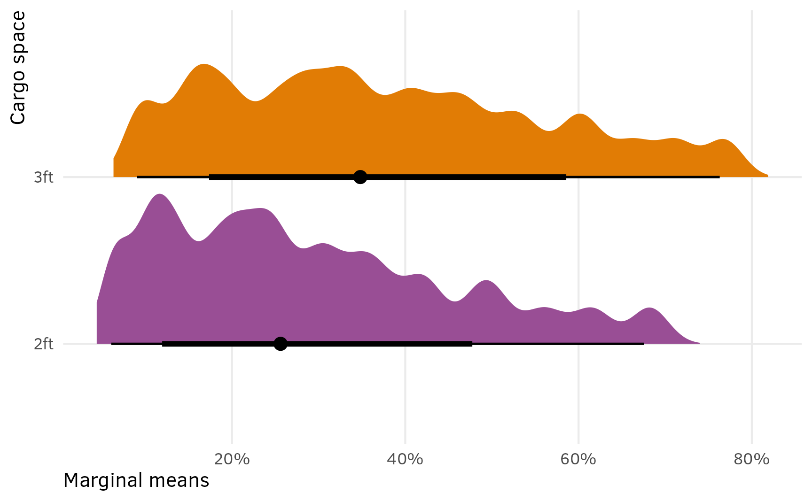
hahahaha check out those mountain ranges. All those peaks come from combining the 27 different 2ft- and 3ft- posterior distributions for all the different combinations of other feature levels.
To get the actual marginal mean for cargo space, we need to marginalize out (or average out) all those other covariates. To do this, we need to group by the cargo column and the .draw column so that we find the average within each set of MCMC draws. To help with the intuition, look how many rows are in each of these groups of cargo and .draw—there are 27 different estimates for each of the 4,000 draws for 2 feet and 27 different estimates for each of the 4,000 draws for 3 feet. We want to collapse (or marginalize) those 27 rows into just one average.
all_preds_brms %>%
group_by(cargo, .draw) %>%
summarize(nrows = n())
## # A tibble: 8,000 × 3
## # Groups: cargo [2]
## cargo .draw nrows
## <fct> <int> <int>
## 1 2ft 1 27
## 2 2ft 2 27
## 3 2ft 3 27
## 4 2ft 4 27
## 5 2ft 5 27
## 6 2ft 6 27
## 7 2ft 7 27
## 8 2ft 8 27
## 9 2ft 9 27
## 10 2ft 10 27
## # ℹ 7,990 more rowsTo do that, we can find the average predicted value in those groups, then work with that as our main estimand. Check out these marginalized-out posteriors now—the medians are the same as before, but the credible intervals make a lot more sense:
preds_cargo_marginalized <- all_preds_brms %>%
# Marginalize out the other covariates
group_by(cargo, .draw) %>%
summarize(avg = mean(.epred))
preds_cargo_marginalized %>%
group_by(cargo) %>%
median_qi()
## # A tibble: 2 × 7
## cargo avg .lower .upper .width .point .interval
## <fct> <dbl> <dbl> <dbl> <dbl> <chr> <chr>
## 1 2ft 0.292 0.275 0.309 0.95 median qi
## 2 3ft 0.374 0.356 0.393 0.95 median qiWe can confirm that marginalizing out the other covariates worked by plotting it:
preds_cargo_marginalized %>%
ggplot(aes(x = avg, y = cargo, fill = cargo)) +
stat_halfeye() +
scale_x_continuous(labels = label_percent()) +
scale_fill_manual(values = clrs[c(11, 7)], guide = "none") +
labs(x = "Marginal means", y = "Cargo space")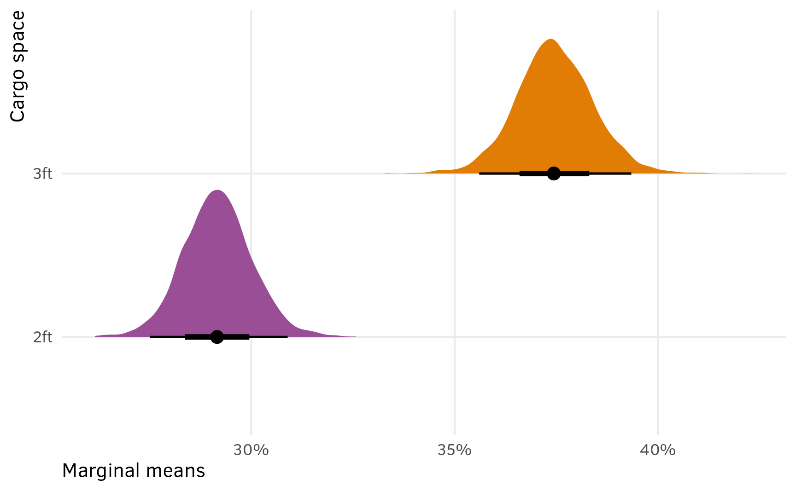
heck. yes.
Finally, we’re actually most interested in the AMCE, or the difference between these two cargo sizes. The compare_levels() function from {tidybayes} can calculate this automatically:
preds_cargo_marginalized %>%
compare_levels(variable = avg, by = cargo, comparison = "control") %>%
median_qi(avg)
## # A tibble: 1 × 7
## cargo avg .lower .upper .width .point .interval
## <chr> <dbl> <dbl> <dbl> <dbl> <chr> <chr>
## 1 3ft - 2ft 0.0830 0.0643 0.100 0.95 median qiThat’s it! The causal effect of moving from 2 feet → 3 feet of storage space, holding all other features constant, is 8 percentage points (with a 95% credible interval of 6.5 to 10 percentage points).
We can combine all these AMCEs into a huge data frame. The marginalization process + compare_levels() has to happen with one feature at a time, so we need to create several separate data frames:
# I could probably do this with purrr::map() to reduce all this repetition, but
# whatever, it works
amces_minivan_brms <- bind_rows(
seat = all_preds_brms %>%
group_by(seat, .draw) %>%
summarize(avg = mean(.epred)) %>%
compare_levels(variable = avg, by = seat, comparison = "control") %>%
rename(contrast = seat),
cargo = all_preds_brms %>%
group_by(cargo, .draw) %>%
summarize(avg = mean(.epred)) %>%
compare_levels(variable = avg, by = cargo, comparison = "control") %>%
rename(contrast = cargo),
eng = all_preds_brms %>%
group_by(eng, .draw) %>%
summarize(avg = mean(.epred)) %>%
compare_levels(variable = avg, by = eng, comparison = "control") %>%
rename(contrast = eng),
price = all_preds_brms %>%
group_by(price, .draw) %>%
summarize(avg = mean(.epred)) %>%
compare_levels(variable = avg, by = price, comparison = "control") %>%
rename(contrast = price),
.id = "term"
)
amces_minivan_brms %>%
group_by(term, contrast) %>%
median_qi(avg)
## # A tibble: 7 × 8
## term contrast avg .lower .upper .width .point .interval
## <chr> <chr> <dbl> <dbl> <dbl> <dbl> <chr> <chr>
## 1 cargo 3ft - 2ft 0.0830 0.0643 0.100 0.95 median qi
## 2 eng elec - gas -0.279 -0.300 -0.256 0.95 median qi
## 3 eng hyb - gas -0.161 -0.184 -0.138 0.95 median qi
## 4 price 35 - 30 -0.178 -0.201 -0.155 0.95 median qi
## 5 price 40 - 30 -0.309 -0.330 -0.287 0.95 median qi
## 6 seat 7 - 6 -0.0995 -0.121 -0.0785 0.95 median qi
## 7 seat 8 - 6 -0.0570 -0.0788 -0.0355 0.95 median qiPlots
Again, plotting these AMCEs so that there’s a reference category at 0 requires some extra data work, so I’ve hidden all that code for the sake of space.
Extract variable labels
minivan_var_levels <- tibble(
variable = c("seat", "cargo", "eng", "price")
) %>%
mutate(levels = map(variable, ~{
x <- minivans[[.x]]
if (is.numeric(x)) {
""
} else if (is.factor(x)) {
levels(x)
} else {
sort(unique(x))
}
})) %>%
unnest(levels) %>%
mutate(term = paste0(variable, levels))
# Make a little lookup table for nicer feature labels
minivan_var_lookup <- tribble(
~variable, ~variable_nice,
"seat", "Passengers",
"cargo", "Cargo space",
"eng", "Engine type",
"price", "Price (thousands of $)"
) %>%
mutate(variable_nice = fct_inorder(variable_nice))Combine full dataset of factor levels with model comparisons and make {mlogit} plot
amces_minivan_mlogit_split <- amces_minivan_mlogit %>%
separate_wider_delim(
term,
delim = " - ",
names = c("variable_level", "reference_level")
) %>%
rename(term = variable)
plot_data <- minivan_var_levels %>%
left_join(
amces_minivan_mlogit_split,
by = join_by(variable == term, levels == variable_level)
) %>%
# Make these zero
mutate(
across(
c(estimate, conf.low, conf.high),
~ ifelse(is.na(.x), 0, .x)
)
) %>%
left_join(minivan_var_lookup, by = join_by(variable)) %>%
mutate(across(c(levels, variable_nice), ~fct_inorder(.)))
p1 <- ggplot(
plot_data,
aes(x = estimate, y = levels, color = variable_nice)
) +
geom_vline(xintercept = 0) +
geom_pointrange(aes(xmin = conf.low, xmax = conf.high)) +
scale_x_continuous(labels = label_pp) +
scale_color_manual(values = clrs[c(3, 7, 8, 9)], guide = "none") +
labs(
x = "Percentage point change in\nprobability of minivan selection",
y = NULL,
title = "Frequentist AMCEs from {mlogit}"
) +
facet_col(facets = "variable_nice", scales = "free_y", space = "free")Combine full dataset of factor levels with marginalized posterior draws and make {brms} plot
posterior_mfx_minivan_nested <- amces_minivan_brms %>%
separate_wider_delim(
contrast,
delim = " - ",
names = c("variable_level", "reference_level")
) %>%
group_by(term, variable_level) %>%
nest()
plot_data_minivan_bayes <- minivan_var_levels %>%
left_join(
posterior_mfx_minivan_nested,
by = join_by(variable == term, levels == variable_level)
) %>%
mutate(data = map_if(data, is.null, ~ tibble(avg = 0))) %>%
unnest(data) %>%
left_join(minivan_var_lookup, by = join_by(variable)) %>%
mutate(across(c(levels, variable_nice), ~fct_inorder(.)))
p2 <- ggplot(plot_data_minivan_bayes, aes(x = avg, y = levels, fill = variable_nice)) +
geom_vline(xintercept = 0) +
stat_halfeye(normalize = "groups") + # Make the heights of the distributions equal within each facet
facet_col(facets = "variable_nice", scales = "free_y", space = "free") +
scale_x_continuous(labels = label_pp) +
scale_fill_manual(values = clrs[c(3, 7, 8, 9)], guide = "none") +
labs(
x = "Percentage point change in\nprobability of minivan selection",
y = NULL,
title = "Posterior Bayesian AMCEs from {brms}"
)p1 + p2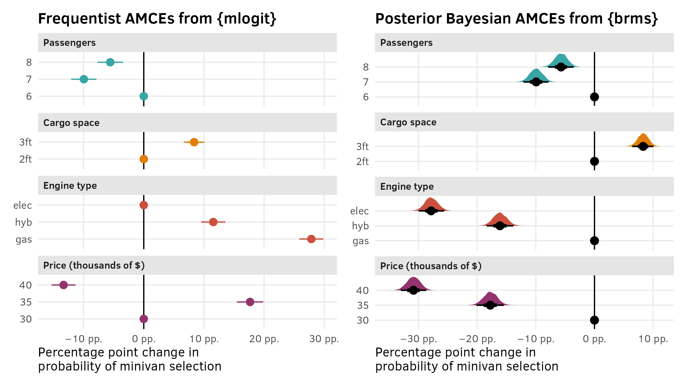
Part 3: Minivans; repeated questions; full hierarchical multinomial logit
The setup
We’ve cheated a little and have already used multilevel structures in the Bayesian models for the chocolate experiment and the minivan experiment. This was because these datasets had a natural panel grouping structure inside them. {mlogit} can work with panel-indexed data frames (that’s the point of that strange dfidx() function). By creating respondent-specific intercepts like we did with the {brms} models, we helped account for some of the variation caused by respondent differences.
But we can do better than that and get far richer and more complex models and estimates and predictions. In addition to using respondent-specific intercepts, we can (1) include respondent-level characteristics as covariates, and (2) include respondent-specific slopes for the minivan characteristic.
In the minivan data, we have data on feature levels (seat, cargo, eng, price) and on individual characteristics (carpool). The carpool variable indicates if the respondent uses their vehicle for carpooling. This is measured at the respondent level and not the choice level (i.e. someone won’t stop being a carpooler during one set of choices and then resume being a carpooler for another set). We can visualize where these different columns are measured by returning to the hierarchical model diagram:
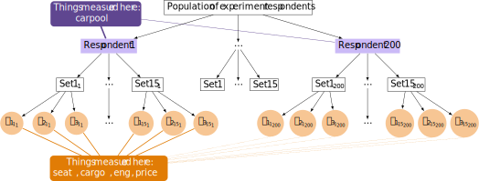
We can use hierarchical models (or multilevel models, or mixed effects models, or whatever you want to call them) to account for choice-level and respondent-level covariates and incorporate respondent-level heterogeneity and covariance into the model estimates.
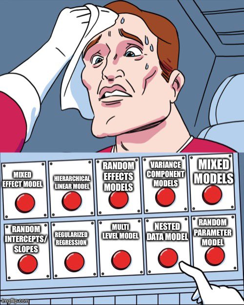
Important sidenote on notation
But before looking at how to incorporate that carpool column into the model, we need to take a quick little detour into the world of notation. There’s no consistent way of writing out multilevel models,1 and accordingly, I thought it was impossible to run fully specified marketing-style hierarchical Bayesian models with {brms}—all because of notation!
1 These are not the only approaches—section 12.5 in Gelman and Hill (2007) is called “Five ways to write the same model,” and they don’t include the offset notation as one of their five!
There are a couple general ways I’ve seen group-level random effects written out in formal model notation: one with complete random β terms and one with random offsets from a global β term.
{brms} / {lme4} syntax
For the best overview of how to use {brms} and {lme4} with different random group-level intercept and slope specifications, check out this summary table by Ben Bolker.
Random intercepts
If you want group-specific intercept terms, you can use a formula like this:
bf(y ~ x + (1 | group))In formal mathy terms, we can write this group-specific intercept as a complete coefficient: \(\beta_{0_j}\). Each group \(j\) gets its own intercept coefficient. Nice and straightforward.
\[ \begin{aligned} Y_{i_j} &\sim \mathcal{N}(\mu_{i_j}, \sigma_y) & \text{Outcome for individual}_i \text{ within group}_j \\ \mu_{i_j} &= \beta_{0_j} + \beta_1 X_{i_j} & \text{Linear model of within-group variation } \\ \beta_{0_j} &\sim \mathcal{N}(\beta_0, \sigma_0) & \text{Random group-specific intercepts} \end{aligned} \]
However, I actually like to think of these random effects in a slightly different way, where each group intercept is actually a combination of a global average (\(\beta_0\)) and a group-specific offset from that average (\(b_{0_j}\)), like this:
\[ \beta_{0_j} = \beta_0 + b_{0_j} \]
That offset is assumed to be normally distributed with a mean of 0 (\(\mathcal{N}(0, \sigma_0)\)):
\[ \begin{aligned} Y_{i_j} &\sim \mathcal{N}(\mu_{i_j}, \sigma_y) & \text{Outcome for individual}_i \text{ within group}_j \\ \mu_{i_j} &= (b_{0_j} + \beta_0) + \beta_1 X_{i_j} & \text{Linear model of within-group variation } \\ b_{0_j} &\sim \mathcal{N}(0, \sigma_0) & \text{Random group-specific offsets from global intercept} \end{aligned} \]
I prefer this offset notation because it aligns with the output of {brms}, which reports population-level coefficients (i.e. the global average \(\beta_0\)) along with group-specific offsets from that average (i.e. \(b_{0_j}\)), which you can access with ranef(model_name).
Random slopes
If you want group-specific intercepts and slopes, you can use a formula like this:
bf(y ~ x + (1 + x | group))The same dual syntax applies when using random slopes too. We can either use whole group-specific \(\beta_{n_j}\) terms, or use offsets (\(b_{n_j}\)) from a global average slope (\(\beta_n\)). When working with random slopes, the math notation gets a little fancier because the random intercept and slope terms are actually correlated and move together across groups. The \(\beta\) terms come from a multivariate (or joint) normal distribution with shared covariance.
With the complete β approach, we’re estimating the joint distribution of \(\begin{pmatrix} \beta_{0_j} \\ \beta_{1_j} \end{pmatrix}\):
\[ \begin{aligned} Y_{i_j} &\sim \mathcal{N}(\mu_{i_j}, \sigma_y) & \text{Outcome for individual}_i \text{ within group}_j \\ \mu_{i_j} &= \beta_{0_j} + \beta_{1_j} X_{i_j} & \text{Linear model of within-group variation } \\ \left( \begin{array}{c} \beta_{0_j} \\ \beta_{1_j} \end{array} \right) &\sim \operatorname{MV}\, \mathcal{N} \left( \left( \begin{array}{c} \beta_0 \\ \beta_1 \\ \end{array} \right) , \, \left( \begin{array}{cc} \sigma^2_{\beta_0} & \rho_{\beta_0, \beta_1}\, \sigma_{\beta_0} \sigma_{\beta_1} \\ \dots & \sigma^2_{\beta_1} \end{array} \right) \right) & \text{Random group-specific slopes and intercepts} \end{aligned} \]
With the offset approach, we’re estimating the joint distribution of the offsets from the global intercept and slope, or \(\begin{pmatrix} b_{0_j} \\ b_{1_j} \end{pmatrix}\):
\[ \begin{aligned} Y_{i_j} &\sim \mathcal{N}(\mu_{i_j}, \sigma_y) & \text{Outcome for individual}_i \text{ within group}_j \\ \mu_{i_j} &= (b_{0_j} + \beta_0) + (b_{1_j} + \beta_1) X_{i_j} & \text{Linear model of within-group variation } \\ \left( \begin{array}{c} b_{0_j} \\ b_{1_j} \end{array} \right) &\sim \operatorname{MV}\, \mathcal{N} \left( \left( \begin{array}{c} 0 \\ 0 \\ \end{array} \right) , \, \left( \begin{array}{cc} \sigma^2_{\beta_0} & \rho_{\beta_0, \beta_1}\, \sigma_{\beta_0} \sigma_{\beta_1} \\ \dots & \sigma^2_{\beta_1} \end{array} \right) \right) & \text{Random group-specific offsets from global intercept and slope} \end{aligned} \]
Summary table
And here’s a helpful little table summarizing these two types of notation (mostly for future me).
| Formula syntax | Full \(\beta\) notation | Offset notation | |
|---|---|---|---|
| Random intercept | y ~ x + (1 | group) |
\[ \begin{aligned} Y_{i_j} &\sim \mathcal{N}(\mu_{i_j}, \sigma_y) \\ \mu_{i_j} &= \beta_{0_j} + \beta_1 X_{i_j} \\ \beta_{0_j} &\sim \mathcal{N}(\beta_0, \sigma_0) \end{aligned} \] | \[ \begin{aligned} Y_{i_j} &\sim \mathcal{N}(\mu_{i_j}, \sigma_y) \\ \mu_{i_j} &= (b_{0_j} + \beta_0) + \beta_1 X_{i_j} \\ b_{0_j} &\sim \mathcal{N}(0, \sigma_0) \end{aligned} \] |
| Random intercept + slope | y ~ x + (1 + x | group) |
\[ \begin{aligned} Y_{i_j} &\sim \mathcal{N}(\mu_{i_j}, \sigma_y) \\ \mu_{i_j} &= \beta_{0_j} + \beta_{1_j} X_{i_j} \\ \left( \begin{array}{c} \beta_{0_j} \\ \beta_{1_j} \end{array} \right) &\sim \operatorname{MV}\, \mathcal{N} \left( \left( \begin{array}{c} \beta_0 \\ \beta_1 \\ \end{array} \right) , \, \Sigma \right) \\ \Sigma &\sim \left( \begin{array}{cc} \sigma^2_{\beta_0} & \rho_{\beta_0, \beta_1}\, \sigma_{\beta_0} \sigma_{\beta_1} \\ \dots & \sigma^2_{\beta_1} \end{array} \right) \end{aligned} \] | \[ \begin{aligned} Y_{i_j} &\sim \mathcal{N}(\mu_{i_j}, \sigma_y) \\ \mu_{i_j} &= (b_{0_j} + \beta_0) + (b_{1_j} + \beta_1) X_{i_j} \\ \left( \begin{array}{c} b_{0_j} \\ b_{1_j} \end{array} \right) &\sim \operatorname{MV}\, \mathcal{N} \left( \left( \begin{array}{c} 0 \\ 0 \\ \end{array} \right) , \, \Sigma \right) \\ \Sigma &\sim \left( \begin{array}{cc} \sigma^2_{\beta_0} & \rho_{\beta_0, \beta_1}\, \sigma_{\beta_0} \sigma_{\beta_1} \\ \dots & \sigma^2_{\beta_1} \end{array} \right) \end{aligned} \] |
Translating from marketing-style Stan notation to {brms} syntax
In Chapman and Feit (2019) and in all the marketing papers I’ve seen that use hierarchical Bayesian models—and even one I coauthored! (Chaudhry, Dotson, and Heiss 2021) (see the appendix)—they define their models using notation like this:
\[ \begin{aligned} \text{Choice} &\sim \operatorname{Multinomial\ logit}(\beta X) & \text{where } X = \text{feature levels} \\ \beta &\sim \operatorname{Multivariate} \mathcal{N}(\gamma Z, \Sigma) & \text{where } Z = \text{individual characteristics} \end{aligned} \]
For the longest time this threw me off because it’s slightly different from the two different notations we just reviewed (full βs vs. offsets from global β), and I figured that specifying a model like this with {brms} was impossible. The main reason for my confusion is that there are two different datasets involved in this model, and {brms} can only really work with one dataset.
In raw Stan (like in this tutorial on conjoint hierarchical Bayes models, or in this example of a different conjoint hierarchical model), you’d typically work with two different datasets or matrices: one \(X\) with feature levels and one \(Z\) with respondent-level characteristics. (This is actually the recommended way to write hierarchical models in raw Stan!).
Here’s what separate \(X\) and \(Z\) matrices would look like with the minivan data—X contains the full data without respondent-level covariates like carpool and it has 9,000 rows; Z contains only respondent-level characteristics like carpool and it only has 200 rows (one per respondent).
X <- minivans %>% select(-carpool)
X
## # A tibble: 9,000 × 8
## resp.id ques alt seat cargo eng price choice
## <dbl> <dbl> <dbl> <fct> <fct> <fct> <fct> <dbl>
## 1 1 1 1 6 2ft gas 35 0
## 2 1 1 2 8 3ft hyb 30 0
## 3 1 1 3 6 3ft gas 30 1
## 4 1 2 1 6 2ft gas 30 0
## 5 1 2 2 7 3ft gas 35 1
## 6 1 2 3 6 2ft elec 35 0
## 7 1 3 1 8 3ft gas 35 1
## 8 1 3 2 7 3ft elec 30 0
## 9 1 3 3 8 2ft elec 40 0
## 10 1 4 1 7 3ft elec 40 1
## # ℹ 8,990 more rows
Z <- minivans %>%
# Only keep the first row of each respondent
group_by(resp.id) %>% slice(1) %>% ungroup() %>%
# Only keep the respondent-level columns
select(resp.id, carpool)
Z
## # A tibble: 200 × 2
## resp.id carpool
## <dbl> <fct>
## 1 1 yes
## 2 2 no
## 3 3 no
## 4 4 no
## 5 5 yes
## 6 6 no
## 7 7 no
## 8 8 yes
## 9 9 no
## 10 10 no
## # ℹ 190 more rowsX and Z are then passed to Stan as separate matrices and used at different places in the model fitting process. Here’s what that looks like in pseudo-Stan code. The matrix of individual characteristics Z is matrix-multiplied with a bunch of estimated \(\gamma\) coefficients (Gamma here) to generate individual-specific \(\beta\) coefficients (Beta here). The matrix of choices X is then matrix-multiplied with the individual-specific \(\beta\) coefficients to generate predicted outcomes (Y here).
for (r in 1:n_respondents) {
// All the individual-specific slopes and intercepts
Beta[,r] ~ multi_normal(Gamma * Z[,r], ...);
// All the question-level outcomes, using individual-specific slopes and intercepts
for (s in 1:n_questions) {
Y[r,s] ~ categorical_logit( X [r,s] * Beta[,r]);
}
}That’s a neat way of working with multilevel models, but it’s different from how I’ve always worked with them (and it requires working with raw Stan). As seen throughout this post, I’m a fan of {brms}’s formula-style syntax for specifying multilevel models, but {brms} can only work with one dataset at a time—you can’t pass it both X and Z like you’d do with raw Stan. So I (naively) figured that this went beyond {brms}’s abilities and was only possible with raw Stan.
However, if we use {brms}’s special formula syntax, we can actually specify an identical model with only one dataset (again, see this for a fantastic overview of the syntax).
First, let’s look at the marketing-style syntax again:
\[ \begin{aligned} \text{Choice} &\sim \operatorname{Multinomial\ logit}(\beta X) & \text{where } X = \text{feature levels} \\ \beta &\sim \operatorname{Multivariate} \mathcal{N}(\gamma Z, \Sigma) & \text{where } Z = \text{individual characteristics} \end{aligned} \]
This is actually just a kind of really compact notation. That second line with the \(\beta \sim \operatorname{Multivariate}\, \mathcal{N}(\cdot)\) distribution is a shorthand version of the full-β syntax from earlier. To illustrate this, let’s expand this out to a more complete formal definition of the model. Instead of using \(X\) to stand in for all the feature levels and \(Z\) for all the individual characteristics, we’ll expand those to include all the covariates we’re using. And instead of calling the distribution “Multinomial logit” we’ll call it “Categorical” so it aligns with Stan. It’ll make for a really massive formula, but it shows what’s really going on.
\[ \begin{aligned} &\ \textbf{Multinomial probability of selection of choice}_i \textbf{ in respondent}_j \\ \text{Choice}_{i_j} \sim&\ \operatorname{Categorical}(\{\mu_{1,i_j}, \mu_{2,i_j}, \mu_{3,i_j}\}) \\[10pt] &\ \textbf{Model for probability of each option} \\ \{\mu_{1,i_j}, \mu_{2,i_j}, \mu_{3,i_j}\} =&\ \beta_{0_j} + \beta_{1_j} \text{Seat[7]}_{i_j} + \beta_{2_j} \text{Seat[8]}_{i_j} + \beta_{3_j} \text{Cargo[3ft]}_{i_j} + \\ &\ \beta_{4_j} \text{Engine[hyb]}_{i_j} + \beta_{5_j} \text{Engine[elec]}_{i_j} + \\ &\ \beta_{6_j} \text{Price[35k]}_{i_j} + \beta_{7_j} \text{Price[40k]}_{i_j} \\[20pt] &\ \textbf{Respondent-specific slopes} \\ \left( \begin{array}{c} \begin{aligned} &\beta_{0_j} \\ &\beta_{1_j} \\ &\beta_{2_j} \\ &\beta_{3_j} \\ &\beta_{4_j} \\ &\beta_{5_j} \\ &\beta_{6_j} \\ &\beta_{7_j} \end{aligned} \end{array} \right) \sim&\ \operatorname{Multivariate}\ \mathcal{N} \left[ \left( \begin{array}{c} \begin{aligned} &\gamma^{\beta_{0}}_{0} + \gamma^{\beta_{0}}_{1}\text{Carpool} \\ &\gamma^{\beta_{1}}_{0} + \gamma^{\beta_{1}}_{1}\text{Carpool} \\ &\gamma^{\beta_{2}}_{0} + \gamma^{\beta_{2}}_{1}\text{Carpool} \\ &\gamma^{\beta_{3}}_{0} + \gamma^{\beta_{3}}_{1}\text{Carpool} \\ &\gamma^{\beta_{4}}_{0} + \gamma^{\beta_{4}}_{1}\text{Carpool} \\ &\gamma^{\beta_{5}}_{0} + \gamma^{\beta_{5}}_{1}\text{Carpool} \\ &\gamma^{\beta_{6}}_{0} + \gamma^{\beta_{6}}_{1}\text{Carpool} \\ &\gamma^{\beta_{7}}_{0} + \gamma^{\beta_{7}}_{1}\text{Carpool} \end{aligned} \end{array} \right) , \left( \begin{array}{cccccccc} \sigma^2_{\beta_{0j}} & \rho_{\beta_{0j}\beta_{1j}} & \rho_{\beta_{0j}\beta_{2j}} & \rho_{\beta_{0j}\beta_{3j}} & \rho_{\beta_{0j}\beta_{4j}} & \rho_{\beta_{0j}\beta_{5j}} & \rho_{\beta_{0j}\beta_{6j}} & \rho_{\beta_{0j}\beta_{7j}} \\ \dots & \sigma^2_{\beta_{1j}} & \rho_{\beta_{1j}\beta_{2j}} & \rho_{\beta_{1j}\beta_{3j}} & \rho_{\beta_{1j}\beta_{4j}} & \rho_{\beta_{1j}\beta_{5j}} & \rho_{\beta_{1j}\beta_{6j}} & \rho_{\beta_{1j}\beta_{7j}} \\ \dots & \dots & \sigma^2_{\beta_{2j}} & \rho_{\beta_{2j}\beta_{3j}} & \rho_{\beta_{2j}\beta_{4j}} & \rho_{\beta_{2j}\beta_{5j}} & \rho_{\beta_{2j}\beta_{6j}} & \rho_{\beta_{2j}\beta_{7j}} \\ \dots & \dots & \dots & \sigma^2_{\beta_{3j}} & \rho_{\beta_{3j}\beta_{4j}} & \rho_{\beta_{3j}\beta_{5j}} & \rho_{\beta_{3j}\beta_{6j}} & \rho_{\beta_{3j}\beta_{7j}} \\ \dots & \dots & \dots & \dots & \sigma^2_{\beta_{4j}} & \rho_{\beta_{4j}\beta_{5j}} & \rho_{\beta_{4j}\beta_{6j}} & \rho_{\beta_{4j}\beta_{7j}} \\ \dots & \dots & \dots & \dots & \dots & \sigma^2_{\beta_{5j}} & \rho_{\beta_{5j}\beta_{6j}} & \rho_{\beta_{5j}\beta_{7j}} \\ \dots & \dots & \dots & \dots & \dots & \dots & \sigma^2_{\beta_{6j}} & \rho_{\beta_{6j}\beta_{7j}} \\ \dots & \dots & \dots & \dots & \dots & \dots & \dots & \sigma^2_{\beta_{7j}} \end{array} \right) \right] \end{aligned} \]
Importantly, pay attention to where the choice-level and respondent-level variables show up in this expanded version. All the choice-level variables have respondent-specific \(\beta\) coefficients, while the respondent-level variable (carpool) is down in that massive multivariate normal matrix with its own \(\gamma\) coefficients, helping determine the respondent-specific \(\beta\) coefficients. That’s great and exactly what we want, and we can do that with raw Stan, but raw Stan is no fun.
We can create this exact same model structure with {brms} like this:
bf(choice_alt ~
# Choice-level predictors that are nested within respondents...
(seat + cargo + eng + price) *
# ...interacted with all respondent-level predictors...
(carpool) +
# ... with random respondent-specific slopes for the
# nested choice-level predictors
(1 + seat + cargo + eng + price | resp.id))We can confirm that this worked by using the miraculous {equatiomatic} package, which automatically converts model objects into LaTeX code. {equatiomatic} doesn’t work with {brms} models, but it does work with frequentist {lme4} models, so we can fit a throwaway frequentist model with this syntax (it won’t actually converge and it’ll give a warning, but that’s fine—we don’t actually care about this model) and then feed it to equatiomatic::extract_eq() to see what it looks like in formal notation.
(This is actually how I figured out the correct combination of interactions and random slopes—I kept trying different combinations that I thought were right until the math matched the huge full model above, with the \(\beta\) and \(\gamma\) terms in the right places.)
library(lme4)
library(equatiomatic)
model_throwaway <- lmer(
choice ~ (seat + cargo + eng + price) * (carpool) +
(1 + seat + cargo + eng + price | resp.id),
data = minivans
)
print(extract_eq(model_throwaway))\[ \begin{aligned} \operatorname{choice}_{i} &\sim N \left(\mu, \sigma^2 \right) \\ \mu &=\alpha_{j[i]} + \beta_{1j[i]}(\operatorname{seat}_{\operatorname{7}}) + \beta_{2j[i]}(\operatorname{seat}_{\operatorname{8}}) + \beta_{3j[i]}(\operatorname{cargo}_{\operatorname{3ft}}) + \beta_{4j[i]}(\operatorname{eng}_{\operatorname{hyb}}) + \beta_{5j[i]}(\operatorname{eng}_{\operatorname{elec}}) + \beta_{6j[i]}(\operatorname{price}_{\operatorname{35}}) + \beta_{7j[i]}(\operatorname{price}_{\operatorname{40}}) \\ \left( \begin{array}{c} \begin{aligned} &\alpha_{j} \\ &\beta_{1j} \\ &\beta_{2j} \\ &\beta_{3j} \\ &\beta_{4j} \\ &\beta_{5j} \\ &\beta_{6j} \\ &\beta_{7j} \end{aligned} \end{array} \right) &\sim N \left( \left( \begin{array}{c} \begin{aligned} &\gamma_{0}^{\alpha} + \gamma_{1}^{\alpha}(\operatorname{carpool}_{\operatorname{yes}}) \\ &\gamma^{\beta_{1}}_{0} + \gamma^{\beta_{1}}_{1}(\operatorname{carpool}_{\operatorname{yes}}) \\ &\gamma^{\beta_{2}}_{0} + \gamma^{\beta_{2}}_{1}(\operatorname{carpool}_{\operatorname{yes}}) \\ &\gamma^{\beta_{3}}_{0} + \gamma^{\beta_{3}}_{1}(\operatorname{carpool}_{\operatorname{yes}}) \\ &\gamma^{\beta_{4}}_{0} + \gamma^{\beta_{4}}_{1}(\operatorname{carpool}_{\operatorname{yes}}) \\ &\gamma^{\beta_{5}}_{0} + \gamma^{\beta_{5}}_{1}(\operatorname{carpool}_{\operatorname{yes}}) \\ &\gamma^{\beta_{6}}_{0} + \gamma^{\beta_{6}}_{1}(\operatorname{carpool}_{\operatorname{yes}}) \\ &\gamma^{\beta_{7}}_{0} + \gamma^{\beta_{7}}_{1}(\operatorname{carpool}_{\operatorname{yes}}) \end{aligned} \end{array} \right) , \left( \begin{array}{cccccccc} \sigma^2_{\alpha_{j}} & \rho_{\alpha_{j}\beta_{1j}} & \rho_{\alpha_{j}\beta_{2j}} & \rho_{\alpha_{j}\beta_{3j}} & \rho_{\alpha_{j}\beta_{4j}} & \rho_{\alpha_{j}\beta_{5j}} & \rho_{\alpha_{j}\beta_{6j}} & \rho_{\alpha_{j}\beta_{7j}} \\ \rho_{\beta_{1j}\alpha_{j}} & \sigma^2_{\beta_{1j}} & \rho_{\beta_{1j}\beta_{2j}} & \rho_{\beta_{1j}\beta_{3j}} & \rho_{\beta_{1j}\beta_{4j}} & \rho_{\beta_{1j}\beta_{5j}} & \rho_{\beta_{1j}\beta_{6j}} & \rho_{\beta_{1j}\beta_{7j}} \\ \rho_{\beta_{2j}\alpha_{j}} & \rho_{\beta_{2j}\beta_{1j}} & \sigma^2_{\beta_{2j}} & \rho_{\beta_{2j}\beta_{3j}} & \rho_{\beta_{2j}\beta_{4j}} & \rho_{\beta_{2j}\beta_{5j}} & \rho_{\beta_{2j}\beta_{6j}} & \rho_{\beta_{2j}\beta_{7j}} \\ \rho_{\beta_{3j}\alpha_{j}} & \rho_{\beta_{3j}\beta_{1j}} & \rho_{\beta_{3j}\beta_{2j}} & \sigma^2_{\beta_{3j}} & \rho_{\beta_{3j}\beta_{4j}} & \rho_{\beta_{3j}\beta_{5j}} & \rho_{\beta_{3j}\beta_{6j}} & \rho_{\beta_{3j}\beta_{7j}} \\ \rho_{\beta_{4j}\alpha_{j}} & \rho_{\beta_{4j}\beta_{1j}} & \rho_{\beta_{4j}\beta_{2j}} & \rho_{\beta_{4j}\beta_{3j}} & \sigma^2_{\beta_{4j}} & \rho_{\beta_{4j}\beta_{5j}} & \rho_{\beta_{4j}\beta_{6j}} & \rho_{\beta_{4j}\beta_{7j}} \\ \rho_{\beta_{5j}\alpha_{j}} & \rho_{\beta_{5j}\beta_{1j}} & \rho_{\beta_{5j}\beta_{2j}} & \rho_{\beta_{5j}\beta_{3j}} & \rho_{\beta_{5j}\beta_{4j}} & \sigma^2_{\beta_{5j}} & \rho_{\beta_{5j}\beta_{6j}} & \rho_{\beta_{5j}\beta_{7j}} \\ \rho_{\beta_{6j}\alpha_{j}} & \rho_{\beta_{6j}\beta_{1j}} & \rho_{\beta_{6j}\beta_{2j}} & \rho_{\beta_{6j}\beta_{3j}} & \rho_{\beta_{6j}\beta_{4j}} & \rho_{\beta_{6j}\beta_{5j}} & \sigma^2_{\beta_{6j}} & \rho_{\beta_{6j}\beta_{7j}} \\ \rho_{\beta_{7j}\alpha_{j}} & \rho_{\beta_{7j}\beta_{1j}} & \rho_{\beta_{7j}\beta_{2j}} & \rho_{\beta_{7j}\beta_{3j}} & \rho_{\beta_{7j}\beta_{4j}} & \rho_{\beta_{7j}\beta_{5j}} & \rho_{\beta_{7j}\beta_{6j}} & \sigma^2_{\beta_{7j}} \end{array} \right) \right) \text{, for resp.id j = 1,} \dots \text{,J} \end{aligned} \]
Different variations of group-level interactions
This syntax is a special R shortcut for interacting carpool with each of the feature variables:
# Short way
(seat + cargo + eng + price) * (carpool)
# This expands to this
seat*carpool + cargo*carpool + eng*carpool + price*carpoolIf we had other respondent-level columns like age (age) and education (ed), the shortcut syntax is really helpful:
# Short way
(seat + cargo + eng + price) * (carpool + age + ed)
# This expands to this
seat*carpool + cargo*carpool + eng*carpool + price*carpool +
seat*age + cargo*age + eng*age + price*age +
seat*ed + cargo*ed + eng*ed + price*edWe don’t necessarily need to fully interact everything. For instance, if we have theoretical reasons to think that carpool status is associated with seat count preferences, but not other features, we can only interact seat and carpool:
bf(choice ~
(seat * carpool) + cargo + eng + price +
(1 + seat + cargo + eng + price | resp.id))
Model running times
The more individual-level interactions you add, the longer it will take for the model to run. As we’ll see below, interacting carpool with the four feature levels takes ≈30 minutes to fit. As you add more individual-level interactions, the running time blows up.
In the replication code for Jensen et al. (2021), where they model a ton of individual variables, they say it takes several days to run. Our models in Chaudhry, Dotson, and Heiss (2021) take hours and hours to run.
mlogit model
{mlogit} can estimate hierarchical models with something like this:
# Define the random parameters
model_mlogit_rpar <- rep("n", length = length(model_minivans_mlogit$coef))
names(model_mlogit_rpar) <- names(model_minivans_mlogit$coef)
# This means these random terms are all normally distributed
model_mlogit_rpar
#> seat7 seat8 cargo3ft enghyb engelec price35 price40
#> "n" "n" "n" "n" "n" "n" "n"
# Run the model with carpool as an individual-level covariate
model_mlogit_hierarchical <- mlogit(
choice ~ 0 + seat + eng + cargo + price | carpool,
data = minivans_idx,
panel = TRUE, rpar = model_mlogit_rpar, correlation = TRUE
)
# Show the results
summary(model_mlogit_hierarchical)However, I’m not a frequentist and I’m already not a huge fan of extracting the predictions and AMCEs from these {mlogit} models. Running and interpreting and working with the results of that object is left as an exercise for the reader :). (See p. 381 in Chapman and Feit (2019) for a worked example of how to do it.)
Finally, the full {brms} model
This is a really complex model with a ton of moving parts, but it’s also incredibly powerful. It lets us account for individual-specific differences across each of the minivan features. For instance, whether an individual carpools probably influences their preferences for the number of seats, and maybe cargo space, but probably doesn’t influence their preferences for engine type. If we had other individual-level characteristics, we could also let those influence feature preferences. Like, the number of kids an individual has probably influences seat count preferences; the individual’s income probably influences their price preferences; and so on.
Let’s define the model more formally again, this time with priors for the parameters we’ll be estimating:
\[ \begin{aligned} &\ \textbf{Multinomial probability of selection of choice}_i \textbf{ in respondent}_j \\ \text{Choice}_{i_j} \sim&\ \operatorname{Categorical}(\{\mu_{1,i_j}, \mu_{2,i_j}, \mu_{3,i_j}\}) \\[10pt] &\ \textbf{Model for probability of each option} \\ \{\mu_{1,i_j}, \mu_{2,i_j}, \mu_{3,i_j}\} =&\ \beta_{0_j} + \beta_{1_j} \text{Seat[7]}_{i_j} + \beta_{2_j} \text{Seat[8]}_{i_j} + \beta_{3_j} \text{Cargo[3ft]}_{i_j} + \\ &\ \beta_{4_j} \text{Engine[hyb]}_{i_j} + \beta_{5_j} \text{Engine[elec]}_{i_j} + \\ &\ \beta_{6_j} \text{Price[35k]}_{i_j} + \beta_{7_j} \text{Price[40k]}_{i_j} \\[20pt] &\ \textbf{Respondent-specific slopes} \\ \left( \begin{array}{c} \begin{aligned} &\beta_{0_j} \\ &\beta_{1_j} \\ &\beta_{2_j} \\ &\beta_{3_j} \\ &\beta_{4_j} \\ &\beta_{5_j} \\ &\beta_{6_j} \\ &\beta_{7_j} \end{aligned} \end{array} \right) \sim&\ \operatorname{Multivariate}\ \mathcal{N} \left[ \left( \begin{array}{c} \begin{aligned} &\gamma^{\beta_{0}}_{0} + \gamma^{\beta_{0}}_{1}\text{Carpool} \\ &\gamma^{\beta_{1}}_{0} + \gamma^{\beta_{1}}_{1}\text{Carpool} \\ &\gamma^{\beta_{2}}_{0} + \gamma^{\beta_{2}}_{1}\text{Carpool} \\ &\gamma^{\beta_{3}}_{0} + \gamma^{\beta_{3}}_{1}\text{Carpool} \\ &\gamma^{\beta_{4}}_{0} + \gamma^{\beta_{4}}_{1}\text{Carpool} \\ &\gamma^{\beta_{5}}_{0} + \gamma^{\beta_{5}}_{1}\text{Carpool} \\ &\gamma^{\beta_{6}}_{0} + \gamma^{\beta_{6}}_{1}\text{Carpool} \\ &\gamma^{\beta_{7}}_{0} + \gamma^{\beta_{7}}_{1}\text{Carpool} \end{aligned} \end{array} \right) , \left( \begin{array}{cccccccc} \sigma^2_{\beta_{0j}} & \rho_{\beta_{0j}\beta_{1j}} & \rho_{\beta_{0j}\beta_{2j}} & \rho_{\beta_{0j}\beta_{3j}} & \rho_{\beta_{0j}\beta_{4j}} & \rho_{\beta_{0j}\beta_{5j}} & \rho_{\beta_{0j}\beta_{6j}} & \rho_{\beta_{0j}\beta_{7j}} \\ \dots & \sigma^2_{\beta_{1j}} & \rho_{\beta_{1j}\beta_{2j}} & \rho_{\beta_{1j}\beta_{3j}} & \rho_{\beta_{1j}\beta_{4j}} & \rho_{\beta_{1j}\beta_{5j}} & \rho_{\beta_{1j}\beta_{6j}} & \rho_{\beta_{1j}\beta_{7j}} \\ \dots & \dots & \sigma^2_{\beta_{2j}} & \rho_{\beta_{2j}\beta_{3j}} & \rho_{\beta_{2j}\beta_{4j}} & \rho_{\beta_{2j}\beta_{5j}} & \rho_{\beta_{2j}\beta_{6j}} & \rho_{\beta_{2j}\beta_{7j}} \\ \dots & \dots & \dots & \sigma^2_{\beta_{3j}} & \rho_{\beta_{3j}\beta_{4j}} & \rho_{\beta_{3j}\beta_{5j}} & \rho_{\beta_{3j}\beta_{6j}} & \rho_{\beta_{3j}\beta_{7j}} \\ \dots & \dots & \dots & \dots & \sigma^2_{\beta_{4j}} & \rho_{\beta_{4j}\beta_{5j}} & \rho_{\beta_{4j}\beta_{6j}} & \rho_{\beta_{4j}\beta_{7j}} \\ \dots & \dots & \dots & \dots & \dots & \sigma^2_{\beta_{5j}} & \rho_{\beta_{5j}\beta_{6j}} & \rho_{\beta_{5j}\beta_{7j}} \\ \dots & \dots & \dots & \dots & \dots & \dots & \sigma^2_{\beta_{6j}} & \rho_{\beta_{6j}\beta_{7j}} \\ \dots & \dots & \dots & \dots & \dots & \dots & \dots & \sigma^2_{\beta_{7j}} \end{array} \right) \right] \\[10pt] &\ \textbf{Priors} \\ \beta_{0 \dots 7} \sim&\ \mathcal{N} (0, 3) \qquad\qquad\ [\text{Prior for choice-level coefficients}] \\ \gamma^{\beta_{0 \dots 7}}_0 \sim&\ \mathcal{N} (0, 3) \qquad\qquad\ [\text{Prior for individual-level coefficients}] \\ \sigma_{\beta_{0 \dots 7}} \sim&\ \operatorname{Exponential}(1) \qquad [\text{Prior for between-respondent intercept and slope variability}] \\ \rho \sim&\ \operatorname{LKJ}(1) \qquad\qquad [\text{Prior for correlation between random slopes and intercepts}] \end{aligned} \]
Here it is in code form. There are a couple new things here in the Stan settings. First, we’re going to create 4 MCMC chains with 4,000 draws rather than 2,000—there are so many parameters to be estimated that we need to let the simulation run longer. Second, we’ve modified the adapt_delta setting to 0.99. Conceptually, this adjusts the size of the steps the MCMC algorithm takes as it traverses the posterior space for each parameter—higher numbers make the steps smaller and more granular. This slows down the MCMC simulation, but it also helps avoid divergent transitions (or failed out-of-bounds draws).
On my 2021 M1 MacBook Pro, running through cmdstanr with 2 CPU cores per chain, it took about 30 minutes to fit. If you’re following along with this post, start running this and go get some lunch or go for a walk or something.
Pre-run model
Alternatively, you can download an .rds file of this completed. This brm() code load the .rds file automatically instead of rerunning the model as long as you put it in a folder named “models” in your working directory. This code uses the {osfr} package to download the .rds file from OSF automatically and places it where it needs to go:
library(osfr) # Interact with OSF via R
# Make a "models" folder if it doesn't exist already
if (!file.exists("models")) { dir.create("models") }
# Download model_minivans_mega_mlm_brms.rds from OSF
osf_retrieve_file("https://osf.io/zp6eh") |>
osf_download(path = "models", conflicts = "overwrite", progress = TRUE)model_minivans_mega_mlm_brms <- brm(
bf(choice_alt ~
# Choice-level predictors that are nested within respondents...
(seat + cargo + eng + price) *
# ...interacted with all respondent-level predictors...
(carpool) +
# ... with random respondent-specific slopes for the
# nested choice-level predictors
(1 + seat + cargo + eng + price | ID | resp.id)),
data = minivans_choice_alt,
family = categorical(refcat = "0"),
prior = c(
prior(normal(0, 3), class = b, dpar = mu1),
prior(normal(0, 3), class = b, dpar = mu2),
prior(normal(0, 3), class = b, dpar = mu3),
prior(exponential(1), class = sd, dpar = mu1),
prior(exponential(1), class = sd, dpar = mu2),
prior(exponential(1), class = sd, dpar = mu3),
prior(lkj(1), class = cor)
),
chains = 4, cores = 4, warmup = 1000, iter = 5000, seed = 1234,
backend = "cmdstanr", threads = threading(2), # refresh = 0,
control = list(adapt_delta = 0.9),
file = "models/model_minivans_mega_mlm_brms"
)This model is incredibly rich. We just estimated more than 5,000 parameters (!!!)—we have three sets of coefficients for each of the three options, and those are all interacted with carpool, plus we have individual-specific offsets to each of those coefficients, plus all the \(\rho\) terms in that massive correlation matrix.
length(get_variables(model_minivans_mega_mlm_brms))
## [1] 5156Since we’re dealing with interaction terms, these raw log odds coefficients are even less helpful on their own. It’s nearly impossible to interpret these coefficients in any meaningful way—there’s no point in even trying to combine each of the individual parts of each effect (random parts, interaction parts, etc.). The only way we’ll be able to interpret these things is by making predictions.
minivans_mega_marginalized <- model_minivans_mega_mlm_brms %>%
gather_draws(`^b_.*$`, regex = TRUE) %>%
# Each variable name has "mu1", "mu2", etc. built in, like "b_mu1_seat6". This
# splits the .variable column into two parts based on a regular expression,
# creating one column for the mu part ("b_mu1_") and one for the rest of the
# variable name ("seat6")
separate_wider_regex(
.variable,
patterns = c(mu = "b_mu\\d_", .variable = ".*")
) %>%
# Find the average of the three mu estimates for each variable within each
# draw, or marginalize across the three options, since they're randomized
group_by(.variable, .draw) %>%
summarize(.value = mean(.value))
minivans_mega_marginalized %>%
group_by(.variable) %>%
median_qi(.value)
## # A tibble: 16 × 7
## .variable .value .lower .upper .width .point .interval
## <chr> <dbl> <dbl> <dbl> <dbl> <chr> <chr>
## 1 Intercept -0.127 -0.281 0.0321 0.95 median qi
## 2 cargo3ft 0.405 0.290 0.521 0.95 median qi
## 3 cargo3ft:carpoolyes 0.162 -0.0488 0.380 0.95 median qi
## 4 carpoolyes -0.718 -1.00 -0.437 0.95 median qi
## 5 engelec -1.59 -1.77 -1.42 0.95 median qi
## 6 engelec:carpoolyes 0.0852 -0.211 0.375 0.95 median qi
## 7 enghyb -0.774 -0.910 -0.640 0.95 median qi
## 8 enghyb:carpoolyes -0.0543 -0.307 0.196 0.95 median qi
## 9 price35 -0.812 -0.947 -0.675 0.95 median qi
## 10 price35:carpoolyes -0.164 -0.414 0.0845 0.95 median qi
## 11 price40 -1.58 -1.74 -1.43 0.95 median qi
## 12 price40:carpoolyes -0.248 -0.528 0.0320 0.95 median qi
## 13 seat7 -0.879 -1.03 -0.735 0.95 median qi
## 14 seat7:carpoolyes 1.14 0.872 1.41 0.95 median qi
## 15 seat8 -0.646 -0.794 -0.501 0.95 median qi
## 16 seat8:carpoolyes 1.13 0.859 1.40 0.95 median qiPredictions
In the non-hierarchical model earlier, we made marketing-style predictions by thinking of a product mix and figuring out the predicted utility and market share of each product in that mix. We can do the same thing here, but now we can incorporate individual-level characteristics too.
Here’s our example product mix again, but this time we’ll repeat it twice—once with carpool set to “yes” and once with it set to “no”. This will let us see the predicted market share for each mix of products for a market of only carpoolers and only non-carpoolers.
example_product_mix <- tribble(
~seat, ~cargo, ~eng, ~price,
"7", "2ft", "hyb", "30",
"6", "2ft", "gas", "30",
"8", "2ft", "gas", "30",
"7", "3ft", "gas", "40",
"6", "2ft", "elec", "40",
"7", "2ft", "hyb", "35"
)
product_mix_carpool <- bind_rows(
mutate(example_product_mix, carpool = "yes"),
mutate(example_product_mix, carpool = "no")
) %>%
mutate(across(everything(), factor)) %>%
mutate(eng = factor(eng, levels = levels(minivans$eng)))We can now go through the same process from earlier where we get logit-scale predictions for this smaller dataset and find the shares inside each draw + category (options 1, 2, and 3) + carpool status group.
draws_df <- product_mix_carpool %>%
add_linpred_draws(model_minivans_mega_mlm_brms, value = "utility", re_formula = NA)
shares_df <- draws_df %>%
# Look at each set of predicted utilities within each draw within each of the
# three outcomes across both levels of carpooling
group_by(.draw, .category, carpool) %>%
mutate(share = exp(utility) / sum(exp(utility))) %>%
ungroup() %>%
mutate(
mix_type = paste(seat, cargo, eng, price, sep = " "),
mix_type = fct_reorder(mix_type, share)
)This new dataset contains 576,000 (!!) rows: 6 products × 2 carpool types × 3 \(\mu\)-specific sets of coefficients × 16,000 MCMC draws. We can summarize this to get posterior medians and credible intervals, making sure to find the average share across the three outcomes (choice 1, 2, and 3), or marginalizing across the outcome.
shares_df %>%
# Marginalize across the three outcomes within each draw
group_by(mix_type, carpool, .draw) %>%
summarize(share = mean(share)) %>%
median_qi(share)
## # A tibble: 12 × 8
## mix_type carpool share .lower .upper .width .point .interval
## <fct> <fct> <dbl> <dbl> <dbl> <dbl> <chr> <chr>
## 1 6 2ft elec 40 no 0.0217 0.0173 0.0272 0.95 median qi
## 2 6 2ft elec 40 yes 0.00946 0.00647 0.0136 0.95 median qi
## 3 7 2ft hyb 35 no 0.0434 0.0350 0.0532 0.95 median qi
## 4 7 2ft hyb 35 yes 0.0573 0.0425 0.0761 0.95 median qi
## 5 7 3ft gas 40 no 0.0655 0.0533 0.0798 0.95 median qi
## 6 7 3ft gas 40 yes 0.0976 0.0716 0.130 0.95 median qi
## 7 7 2ft hyb 30 no 0.0972 0.0824 0.114 0.95 median qi
## 8 7 2ft hyb 30 yes 0.148 0.118 0.183 0.95 median qi
## 9 8 2ft gas 30 no 0.265 0.239 0.293 0.95 median qi
## 10 8 2ft gas 30 yes 0.423 0.367 0.479 0.95 median qi
## 11 6 2ft gas 30 no 0.506 0.472 0.540 0.95 median qi
## 12 6 2ft gas 30 yes 0.261 0.223 0.303 0.95 median qiAnd we can plot them:
shares_df %>%
mutate(carpool = case_match(carpool, "no" ~ "Non-carpoolers", "yes" ~ "Carpoolers")) %>%
# Marginalize across the three outcomes within each draw
group_by(mix_type, carpool, .draw) %>%
summarize(share = mean(share)) %>%
ggplot(aes(x = share, y = mix_type, slab_alpha = carpool)) +
stat_halfeye(normalize = "groups", fill = clrs[10]) +
scale_x_continuous(labels = label_percent()) +
scale_slab_alpha_discrete(
range = c(1, 0.4),
guide = "none"
) +
facet_wrap(vars(carpool)) +
labs(x = "Predicted market share", y = "Hypothetical product mix")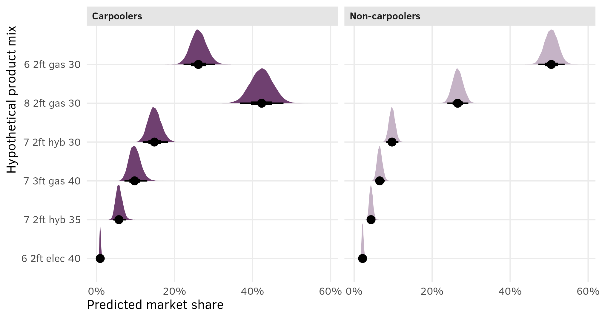
This is so cool! In general, the market share for these six hypothetical products is roughly the same across carpoolers and non-carpoolers, with one obvious exception—among non-carpoolers, the $30,000 8-passenger gas minivan with 2 feet of space has 26% of the market, while among carpoolers it has 42%. Individuals who carpool apparently really care about the number of passengers their vehicle can carry.
AMCEs
To find the average marginal component effects (AMCEs), or the causal effect of moving one of these features to another value, holding all other variables constant, we can go through the same process as before. We’ll calculate the predicted probabilities of choosing option 0, 1, 2, and 3 across a full grid of all the combinations of feature levels and carpool status. We’ll then filter those predictions to only look at option 0 and reverse the predicted probabilities. Again, that feels weird, but it’s a neat little trick—if there’s a 33% chance that someone will select a specific combination of features, that would imply a 66% chance of not selecting it and an 11% chance of selecting it when it appears in option 1, option 2, and option 3. Rather than adding the probabilities within those three options together, we can do 100% − 66% to get the same 33% value, only it’s automatically combined.
Earlier we had 54 combinations—now we have 108 (54 × 2). We’ll set resp.id to one that’s not in the dataset (201) so that these effects all deal with a generic hypothetical respondent (we could also do some fancy “integrating out” work and find population-level averages; see here for more about that).
newdata_all_combos_carpool <- minivans %>%
tidyr::expand(seat, cargo, eng, price, carpool) %>%
mutate(resp.id = 201)
newdata_all_combos_carpool
## # A tibble: 108 × 6
## seat cargo eng price carpool resp.id
## <fct> <fct> <fct> <fct> <fct> <dbl>
## 1 6 2ft gas 30 no 201
## 2 6 2ft gas 30 yes 201
## 3 6 2ft gas 35 no 201
## 4 6 2ft gas 35 yes 201
## 5 6 2ft gas 40 no 201
## 6 6 2ft gas 40 yes 201
## 7 6 2ft hyb 30 no 201
## 8 6 2ft hyb 30 yes 201
## 9 6 2ft hyb 35 no 201
## 10 6 2ft hyb 35 yes 201
## # ℹ 98 more rowsNext we can plug this grid into the model, filter to only keep option 0, and reverse the predictions:
all_preds_brms_carpool <- model_minivans_mega_mlm_brms %>%
epred_draws(
newdata = newdata_all_combos_carpool,
re_formula = NULL, allow_new_levels = TRUE
) %>%
filter(.category == 0) %>%
mutate(.epred = 1 - .epred)This thing has 1.7 million rows in it, so we need to group and summarize to do anything useful with it. We also need to marginalize across all the other covariates when grouping (i.e. if we want the estimates for passenger seat count across carpool status, we need to average out all the other covariates).
To test that this worked, here are the posterior marginal means for seat count:
preds_seat_carpool_marginalized <- all_preds_brms_carpool %>%
# Marginalize out the other covariates in each draw
group_by(seat, carpool, .draw) %>%
summarize(avg = mean(.epred))
preds_seat_carpool_marginalized %>%
group_by(seat, carpool) %>%
median_qi(avg)
## # A tibble: 6 × 8
## seat carpool avg .lower .upper .width .point .interval
## <fct> <fct> <dbl> <dbl> <dbl> <dbl> <chr> <chr>
## 1 6 no 0.425 0.377 0.483 0.95 median qi
## 2 6 yes 0.287 0.245 0.339 0.95 median qi
## 3 7 no 0.262 0.205 0.337 0.95 median qi
## 4 7 yes 0.335 0.267 0.419 0.95 median qi
## 5 8 no 0.305 0.225 0.409 0.95 median qi
## 6 8 yes 0.378 0.288 0.488 0.95 median qiThose credible intervals all look reasonable (i.e. not ranging from 5% to 80% or whatever), but it’s hard to see any trends from just this table. Let’s plot it:
preds_seat_carpool_marginalized %>%
ggplot(aes(x = avg, y = seat)) +
stat_halfeye(aes(slab_alpha = carpool), fill = clrs[3]) +
scale_x_continuous(labels = label_percent()) +
scale_slab_alpha_discrete(
range = c(0.4, 1),
labels = c("Non-carpoolers", "Carpoolers"),
guide = guide_legend(
reverse = TRUE, override.aes = list(fill = "grey10"),
keywidth = 0.8, keyheight = 0.8
)
) +
labs(
x = "Marginal means",
y = NULL,
slab_alpha = NULL
) +
theme(
legend.position = "top",
legend.justification = "left",
legend.margin = margin(l = -7, t = 0)
)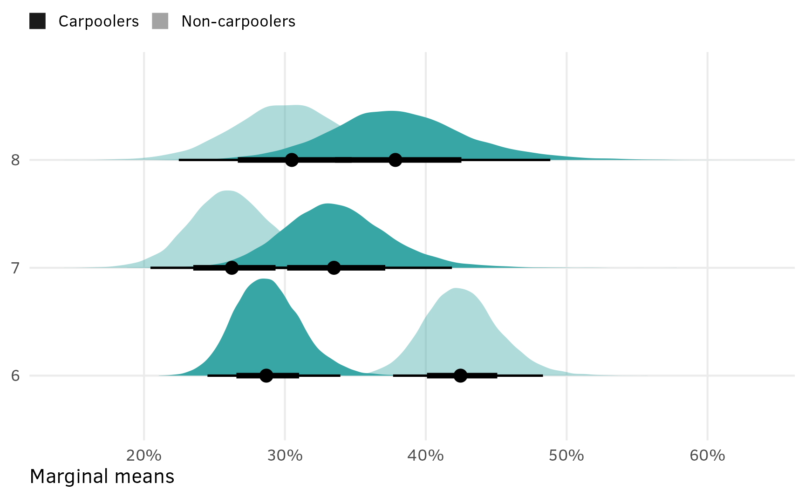
Neat! The average posterior predicted probability of choosing six seats is substantially higher for carpoolers than for non-carpoolers, while the probability for seven and eight seats is bigger for carpoolers.
We’re most interested in the AMCE though, and not the marginal means, so we’ll use compare_levels() to find the carpool-specific differences between the effect of moving from 6 → 7 and 6 → seats:
amces_seat_carpool <- preds_seat_carpool_marginalized %>%
group_by(carpool) %>%
compare_levels(variable = avg, by = seat, comparison = "control")
amces_seat_carpool %>%
median_qi(avg)
## # A tibble: 4 × 8
## carpool seat avg .lower .upper .width .point .interval
## <fct> <chr> <dbl> <dbl> <dbl> <dbl> <chr> <chr>
## 1 no 7 - 6 -0.162 -0.231 -0.0877 0.95 median qi
## 2 no 8 - 6 -0.120 -0.219 -0.00669 0.95 median qi
## 3 yes 7 - 6 0.0478 -0.0247 0.129 0.95 median qi
## 4 yes 8 - 6 0.0912 -0.0114 0.207 0.95 median qiAmong carpoolers, the causal effect of moving from 6 → 7 passengers, holding all other features constant, is a 5ish percentage point increase in the probability of selecting the vehicle. The effect is bigger (9ish percentage points) when moving from 6 → 8.
Among non-carpoolers, the causal effect is reversed. Moving from 6 → 7 passengers causes a 16 percentage point decrease in the probability of selection, while moving from 6 → 8 causes a 12 percentage point decrease, holding all other features constant.
These effects are “significant” and have a 90–97% probability of being greater than zero for carpoolers and 98–99% probability of being less than zero for the non-carpoolers.
# Calculate probability of direction
amces_seat_carpool %>%
group_by(seat, carpool) %>%
summarize(p_gt_0 = sum(avg > 0) / n()) %>%
mutate(p_lt_0 = 1 - p_gt_0)
## # A tibble: 4 × 4
## # Groups: seat [2]
## seat carpool p_gt_0 p_lt_0
## <chr> <fct> <dbl> <dbl>
## 1 7 - 6 no 0.000625 0.999
## 2 7 - 6 yes 0.908 0.0916
## 3 8 - 6 no 0.0208 0.979
## 4 8 - 6 yes 0.961 0.0387amces_seat_carpool %>%
ggplot(aes(x = avg, y = seat)) +
stat_halfeye(aes(slab_alpha = carpool), fill = clrs[3]) +
geom_vline(xintercept = 0) +
scale_x_continuous(labels = label_pp) +
scale_slab_alpha_discrete(
range = c(0.4, 1),
labels = c("Non-carpoolers", "Carpoolers"),
guide = guide_legend(
reverse = TRUE, override.aes = list(fill = "grey10"),
keywidth = 0.8, keyheight = 0.8
)
) +
labs(
x = "Percentage point change in probability of minivan selection",
y = NULL,
slab_alpha = NULL
) +
theme(
legend.position = "top",
legend.justification = "left",
legend.margin = margin(l = -7, t = 0)
)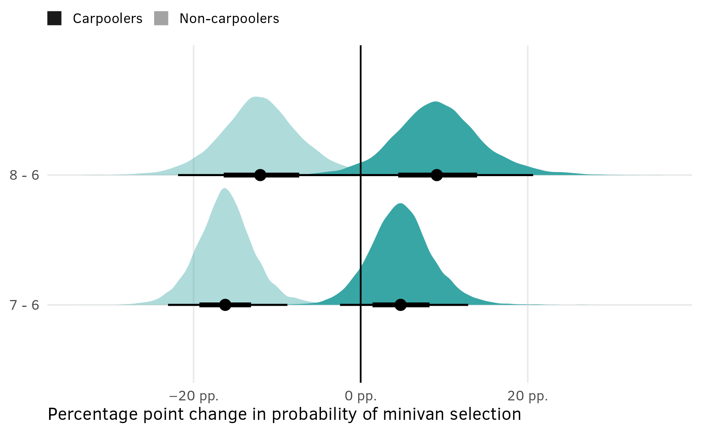
Here are all the AMCEs across carpool status:
amces_minivan_carpool <- bind_rows(
seat = all_preds_brms_carpool %>%
group_by(seat, carpool, .draw) %>%
summarize(avg = mean(.epred)) %>%
compare_levels(variable = avg, by = seat, comparison = "control") %>%
rename(contrast = seat),
cargo = all_preds_brms_carpool %>%
group_by(cargo, carpool, .draw) %>%
summarize(avg = mean(.epred)) %>%
compare_levels(variable = avg, by = cargo, comparison = "control") %>%
rename(contrast = cargo),
eng = all_preds_brms_carpool %>%
group_by(eng, carpool, .draw) %>%
summarize(avg = mean(.epred)) %>%
compare_levels(variable = avg, by = eng, comparison = "control") %>%
rename(contrast = eng),
price = all_preds_brms_carpool %>%
group_by(price, carpool, .draw) %>%
summarize(avg = mean(.epred)) %>%
compare_levels(variable = avg, by = price, comparison = "control") %>%
rename(contrast = price),
.id = "term"
)
amces_minivan_carpool %>%
group_by(term, carpool, contrast) %>%
median_qi(avg)
## # A tibble: 14 × 9
## term carpool contrast avg .lower .upper .width .point .interval
## <chr> <fct> <chr> <dbl> <dbl> <dbl> <dbl> <chr> <chr>
## 1 cargo no 3ft - 2ft 0.0750 0.0358 0.117 0.95 median qi
## 2 cargo yes 3ft - 2ft 0.102 0.0555 0.152 0.95 median qi
## 3 eng no elec - gas -0.288 -0.400 -0.147 0.95 median qi
## 4 eng no hyb - gas -0.160 -0.208 -0.108 0.95 median qi
## 5 eng yes elec - gas -0.273 -0.389 -0.125 0.95 median qi
## 6 eng yes hyb - gas -0.166 -0.223 -0.104 0.95 median qi
## 7 price no 35 - 30 -0.167 -0.223 -0.107 0.95 median qi
## 8 price no 40 - 30 -0.294 -0.354 -0.230 0.95 median qi
## 9 price yes 35 - 30 -0.203 -0.270 -0.131 0.95 median qi
## 10 price yes 40 - 30 -0.342 -0.412 -0.272 0.95 median qi
## 11 seat no 7 - 6 -0.162 -0.231 -0.0877 0.95 median qi
## 12 seat no 8 - 6 -0.120 -0.219 -0.00669 0.95 median qi
## 13 seat yes 7 - 6 0.0478 -0.0247 0.129 0.95 median qi
## 14 seat yes 8 - 6 0.0912 -0.0114 0.207 0.95 median qiAnd finally, here’s a polisci-style plot of all these AMCEs, which is so so neat. An individual’s carpooling behavior interacts with seat count (increasing the seat count causes carpoolers to select the minivan more often), and it also interacts a bit with cargo space (increasing the cargo space makes both types of individuals more likely to select the minivan, but moreso for carpoolers) and also with price (increasing the price makes both types of individuals less likely to select the minivan, but moreso for carpoolers). Switching from gas → hybrid and gas → electric has a negative effect on both types of consumers, and there’s no carpooling-based difference.
Extract variable labels
minivan_var_levels <- tibble(
variable = c("seat", "cargo", "eng", "price")
) %>%
mutate(levels = map(variable, ~{
x <- minivans[[.x]]
if (is.numeric(x)) {
""
} else if (is.factor(x)) {
levels(x)
} else {
sort(unique(x))
}
})) %>%
unnest(levels) %>%
mutate(term = paste0(variable, levels))
# Make a little lookup table for nicer feature labels
minivan_var_lookup <- tribble(
~variable, ~variable_nice,
"seat", "Passengers",
"cargo", "Cargo space",
"eng", "Engine type",
"price", "Price (thousands of $)"
) %>%
mutate(variable_nice = fct_inorder(variable_nice))Combine full dataset of factor levels with marginalized posterior draws and make plot
posterior_amces_minivan_carpool_nested <- amces_minivan_carpool %>%
separate_wider_delim(
contrast,
delim = " - ",
names = c("variable_level", "reference_level")
) %>%
group_by(term, variable_level) %>%
nest()
plot_data_minivan_carpool <- minivan_var_levels %>%
left_join(
posterior_amces_minivan_carpool_nested,
by = join_by(variable == term, levels == variable_level)
) %>%
mutate(data = map_if(data, is.null, ~ tibble(avg = 0))) %>%
unnest(data) %>%
left_join(minivan_var_lookup, by = join_by(variable)) %>%
mutate(across(c(levels, variable_nice), ~fct_inorder(.))) %>%
# Make the missing carpool values be "yes" for the reference category
mutate(carpool = replace_na(carpool, "yes"))
plot_data_minivan_carpool %>%
ggplot(aes(x = avg, y = levels, fill = variable_nice)) +
geom_vline(xintercept = 0) +
stat_halfeye(aes(slab_alpha = carpool), normalize = "groups") +
facet_col(facets = "variable_nice", scales = "free_y", space = "free") +
scale_x_continuous(labels = label_pp) +
scale_slab_alpha_discrete(
range = c(0.4, 1),
labels = c("Non-carpoolers", "Carpoolers"),
guide = guide_legend(
reverse = TRUE, override.aes = list(fill = "grey10"),
keywidth = 0.8, keyheight = 0.8
)
) +
scale_fill_manual(values = clrs[c(3, 7, 8, 9)], guide = "none") +
labs(
x = "Percentage point change in probability of minivan selection",
y = NULL,
title = "AMCEs across respondent carpool status",
slab_alpha = NULL
) +
theme(
legend.position = "top",
legend.justification = "left",
legend.margin = margin(l = -7, t = 0)
)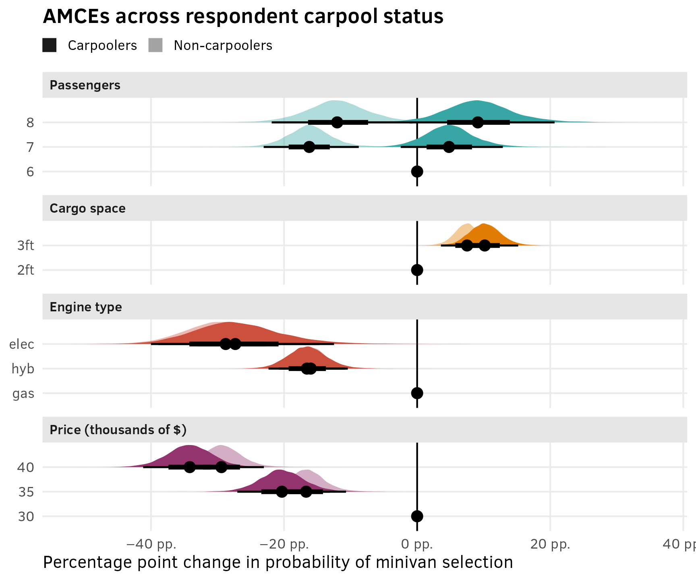
tl;dr: Moral of the story
holy crap this might be the longest guide I’ve ever posted here. This is hard.
Main points
OLS is nice and easy, but it fails to capture all the dynamics between sets of features and individual characteristics. Use multilevel multinomial models to account for all the heterogeneity in choices and individuals.
{brms} provides a powerful, easy-to-use frontend for running complex multilevel models in Stan. There’s no need to write raw Stan code if you don’t want to.
This is hard stuff. Multinomial logit models are complex and weird to work with. But the power and flexibility and richness is worth it.
Here’s a general summary of the main code for all this, based on a hypothetical conjoint survey with three features, like this:
| Features/Attributes | Levels |
|---|---|
Brand (brand) |
A, B, C |
Color (color) |
Blue, red, yellow |
Size (size) |
Small, large |
And imagine that we have data on respondent age (resp_age) and education (resp_ed).
Specify a full luxury multilevel model with individual-level characteristics informing choice-level coefficients like this (see here):
model <- brm( bf(choice ~ # Columns for feature interacted with respondent-level covariates (brand + color + size) * (resp_age + resp_ed) + # Respondent-specific intercepts and slopes for all features (1 + brand + color + sice | ID | resp_id)), family = categorical(), data = data )Find marketing-style predicted shares for hypothetical mixes of products by feeding a smaller dataset of hypothetical mixes to
brms::posterior_linpred()(ortidybayes::linpred_draws()) to find utility (or logit-scale predictions), then calculate the share for each draw, and then marginalize (or average) the shares across the multiple choices within each draw. (See here.)product_mix <- tribble( ~brand, ~color, ~size, ~resp_age, "A", "Blue", "Small", 25, "B", "Red", "Small", 25, "C", "Yellow", "Large", 25, "A", "Blue", "Small", 45, "B", "Red", "Small", 45, "C", "Yellow", "Large", 45 ) model %>% linpred_draws(newdata = product_mix, value = "utility") %>% group_by(.draw, .category, resp_age) %>% mutate(share = exp(utility) / sum(exp(utility))) %>% # Marginalize across the outcomes within each draw group_by(brand, color, size, resp_age, .draw) %>% summarize(share = mean(share))Find political science-style marginal means and AMCEs by feeding a complete grid of all possible feature levels, along with any respondent-level characteristics of interest to
brms::posterior_epred()(ortidybayes::epred_draws()), then filter those probabilities to look only at option 0 (i.e. not choosing an option), and calculate1 - predictionto reverse it. Then group by the feature level and respondent-level characteristics you’re interested in, find the average of predictions, and marginalize (or average) out the other covariates in each draw. (See here.)all_feature_combos_with_age <- data %>% tidyr::expand(brand, color, size, resp_age) all_predictions <- model %>% epred_draws(newdata = all_feature_combos_with_age) %>% # Only look at category 0 and reverse predictions filter(.category == 0) %>% mutate(.epred = 1 - .epred) # Marginal means for brand across respondent age all_predictions %>% # Marginalize out the other covariates in each draw group_by(brand, resp_age, .draw) %>% summarize(avg = mean(.epred)) # AMCEs for brand across respondent age all_predictions %>% # Marginalize out the other covariates in each draw group_by(brand, resp_age, .draw) %>% summarize(avg = mean(.epred)) %>% group_by(resp_age) %>% compare_levels(variable = avg, by = brand, comparison = "control")
Fin.
References
Chapman, Chris, and Elea McDonnell Feit. 2019. R For Marketing Research and Analytics. 2nd ed. Use R! Cham, Switzerland: Springer Nature Switzerland. https://doi.org/10.1007/978-3-030-14316-9.
Chaudhry, Suparna, Marc Dotson, and Andrew Heiss. 2021. “Who Cares about Crackdowns? Exploring the Role of Trust in Individual Philanthropy.” Global Policy 12 (S5): 45–58. https://doi.org/10.1111/1758-5899.12984.
Gelman, Andrew, and Jennifer Hill. 2007. Data Analysis Using Regression and Multilevel/Hierarchical Models. Cambridge: Cambridge University Press. https://doi.org/10.1017/CBO9780511790942.
Jensen, Amalie, William Marble, Kenneth Scheve, and Matthew J. Slaughter. 2021. “City Limits to Partisan Polarization in the American Public.” Political Science Research and Methods 9 (2): 223–41. https://doi.org/10.1017/psrm.2020.56.
Kuhfeld, Warren F. 2010. “Discrete Choice.” SAS Technical Paper MR2010F. SAS Institute. http://support.sas.com/resources/papers/tnote/tnote_marketresearch.html.
Citation
BibTeX citation:
@online{heiss2023,
author = {Heiss, Andrew},
title = {The Ultimate Practical Guide to Multilevel Multinomial
Conjoint Analysis with {R}},
date = {2023-08-12},
url = {https://knuutila.net/blog/2023/08/12/conjoint-multilevel-multinomial-guide},
doi = {10.59350/2mz75-rrc46},
langid = {en}
}
For attribution, please cite this work as:
Heiss, Andrew. 2023. “The Ultimate Practical Guide to Multilevel
Multinomial Conjoint Analysis with R.” August 12, 2023. https://doi.org/10.59350/2mz75-rrc46.